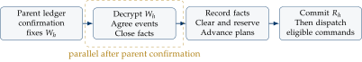

Event-Collect BFT
Abstract
A distributed ledger must agree on an event-dependent trade even when evidence arrives unevenly and a payment provider has completed only part of the transfer. The participants need one record of the accepted event, the trades it permits, and the performance still owed. We construct a protocol that commits this complete execution state, with unresolved events and payments recorded as pending. A confirmed parent block fixes the encrypted transaction order before decryption, so participants can collect event evidence while revealing instructions whose positions are already fixed. Closed collections of signed evidence let the participants agree despite missing responses. Under the stated fault, cryptographic, availability, and adapter assumptions, we prove agreement, atomic ledger updates, conservation, and progress without waiting for every external action to finish. Actual settlement additionally requires authority, funding, and provider performance. We also prove a five-round bound for a specified class of protocols that establish two separate ordering-related certificates at the same height. The parent-fixed construction lies outside that class.
BFT abbreviates Byzantine fault tolerance: agreement despite participants that can send false or inconsistent messages.
The author has a commercial interest in systems of the kind this paper describes.
1 The Governing Problem
Four participants keep copies of a ledger. Alice has instructed it to transfer seven units to Bob if an external event resolves yes. Some participants may receive the event report while others still await it. One participant may send false reports or inconsistent messages. The honest participants must agree on both the event decision and the transfer before changing their copies. A missing report must have a defined result if other work is to continue.
The participants are called validators. A participant that can deviate arbitrarily is called Byzantine. Byzantine fault tolerance (BFT) asks honest validators to maintain agreement despite a bounded number of such faults. Here agreement concerns the full execution of a trade: the accepted event, the clearing decision that determines what each party owes, and the resulting performance or outstanding obligation. A local transfer changes balances within the ledger. An external transfer requires a provider to act outside it.
The external case adds a different uncertainty. A command for 100 units may have produced confirmed performance of 60 while the remaining 40 remains possible. Recording zero would discard completed performance. Sending a fresh command for the unpaid amount could duplicate performance if the first command completes. The ledger must retain the 60, the remaining obligation, and the first command’s possible further effect. Later evidence can then support completion or an authorized recovery attempt. An instruction receipt records what the ledger did with an instruction. It can confirm admission of an external plan while that plan still awaits settlement.
There is also an ordering problem before execution. A validator that reads a pending trade before its position is fixed can insert a transaction before it. Threshold encryption divides decryption power among validators, so fewer than a specified number cannot reveal fresh protected terms. The protocol must therefore specify when honest validators release their decryption contributions, called shares. This construction fixes the encrypted order in the preceding confirmed block. Decryption and event collection can then proceed concurrently. A block’s height is its position in the ledger sequence. The preceding block is its parent, and the next block is its child.
Each requirement needs its own argument. Evidence collection must produce a finite, checkable input despite missing messages. Agreement must select one such input without losing safety when a leader or communication path fails. Execution must preserve completed effects and unpaid obligations as providers respond. Agreement on an instruction alone establishes none of its external performance. The child therefore commits all three results under one state root, a cryptographic hash that binds the complete recorded state. A certificate is checkable evidence for a particular protocol claim. Its meaning depends on the statement its signers authenticate.
Practical Byzantine Fault Tolerance established agreement over replicated state-machine execution [5]. Here a state machine is a rule that computes the next ledger state from the present state and its admitted inputs. Narwhal separates transaction dissemination from ordering [8], and F3B releases threshold decryption material after transaction confirmation [11]. The construction must combine fixed encrypted order, incomplete event evidence, and continuing external execution in one reproducible state transition. The proofs use an existing agreement protocol and specify the additional values and evidence that it must accept.
Admissible Obligation Transitions defines event atomicity and the choice among gross, net, and provisional obligations [1]. Here event atomicity means that the accepted outcome and its clearing and execution dispositions enter the ledger together. Each cleared external group carries its command plan, known performance, outstanding obligations, and continuation. Legal discharge follows the configured performance rule and its institutional basis. Beneficiary receipt requires the corresponding authenticated evidence.
This paper uses ledger confirmation for the protocol’s committed decision. Legal finality is the point defined by applicable rules and law. Funding supplies the required settlement asset on the clearing architecture’s specified clock [2]. Beneficiary receipt is the receipt of usable value. These events can occur at different times. Principle 8 of the Principles for Financial Market Infrastructures (PFMI) requires rules defining when settlement is final [22]. Fedwire illustrates the distinction: Regulation J and Operating Circular 6 determine finality for its payment orders [23, 24]. Another ledger cannot confer that finality.
The results concern components that implement the custody, encryption, event admission, deterministic execution, and consensus interfaces specified below. Compatible received quantities must serve as much admitted outstanding performance as the fixed history permits. The allocation construction implements this requirement. The history analysis distinguishes fresh hidden instructions from disclosed ones, and first completion from current performance after a reversal.
2 Model and Types
The fault bound determines how many signatures a decision needs. A quorum is a sufficiently large set of validators that any two such sets share an honest participant. That shared participant prevents incompatible certificates when honest signers obey the protocol’s voting rule. Write \mathcal{V} for the validator set, n for its size, f for the permitted fault count, and q for the quorum threshold.
Definition 2.1 (Validators and strict quorum).
Let \mathcal{V}=\{v_1,\ldots,v_n\} and f=\left\lfloor\frac{n-1}{3}\right\rfloor, \qquad q=n-f=\left\lfloor\frac{2n}{3}\right\rfloor+1. At most f validators are Byzantine. A quorum is any subset of \mathcal{V} of cardinality at least q.
The strict formula matters when 3 divides n. For example, q(3k)=2k+1, whereas \lceil2(3k)/3\rceil=2k is too small for the claims below.
Lemma 2.2 (Quorum intersection).
Any two quorums intersect in at least n-2f\ge f+1 validators. Their intersection therefore contains an honest validator.
Proof. For quorums Q,Q'\subseteq\mathcal{V}, |Q\cap Q'|\ge |Q|+|Q'|-n\ge 2(n-f)-n=n-2f. Since n\ge3f+1, n-2f\ge f+1. At most f validators are Byzantine. ◻
Safety excludes conflicting decisions, and liveness requires an eventual decision. Safety holds under arbitrary message delay. Liveness requires communication eventually to recover. An encryption epoch is an interval governed by one declared key record and fault roster. The static adversary assumption fixes corrupted participants within that epoch.
Assumption 2.3 (Network and adversary).
The network is partially synchronous. Safety holds without a delay bound. For liveness, after an unknown global stabilization time, every message sent between honest validators arrives within a finite bound \Delta. The adversary is computationally bounded, controls at most f validators, and is static within one encryption epoch.
Encryption must allow honest validators to check a decryption share without learning the plaintext too early. We use the named threshold-encryption scheme TDH2 for this interface. A label binds a ciphertext to its intended public context. Distributed setup supplies each validator’s secret share and a public key for checking that validator’s later contribution. The reconstruction threshold k is the number of distinct valid shares needed. The cryptographic assumption below names its security model: decisional Diffie–Hellman is the underlying computational hardness assumption, and random oracles model the specified hash interfaces.
Assumption 2.4 (Cryptographic suite and setup).
The reference construction is TDH2, Section 6 of the September 2001 Shoup–Gennaro full paper [13]. Its static-corruption security argument uses decisional Diffie–Hellman and independent random oracles. Ciphertext validation binds an encryption-time label. Public share verification supports consistent decryption.
The default reconstruction threshold is k=q=n-f. Distributed setup uses the high-threshold construction of Das et al. [14], with fault bound t=f and polynomial degree \ell=k-1. Its required interval \ell\in[t,n-t-1] holds because f<k\le n-f. The output supplies key shares, the public key, and each roster member’s public verification key. The setup adversary controls at most f participants. The cited model separately permits specified final-share exposures up to \ell shares in total. It supplies no additional corrupted setup state. Its corrupted and exposed sets are fixed before setup.
Hashes are collision resistant and signatures are unforgeable. The hybrid payload encryption has confidentiality and ciphertext integrity. The deployed suite fixes every algorithm, encoding, domain separator, parameter, and implementation revision. Conformance must connect the setup output, encryption primitive, wrapper, and persistent release state to these declared contracts.
An instruction must expose enough information to begin event collection and select a settlement rule while keeping its economic terms encrypted. Authentication identifies who authorized those public fields and the encrypted payload. A decision clock specifies which clock determines the last permitted instruction decision. The hash function \mathsf{H} binds canonical bytes: canonical means that each admitted value has exactly one encoding.
Definition 2.5 (Authenticated encrypted instruction).
An instruction envelope is x=(\kappa,e,a,\tau,c,\sigma), where \kappa is a unique instruction identifier, e is an optional event identifier, a is a settlement-asset class, \tau=(D,b) names the instruction’s decision-clock domain and final permitted clock value, c is the ciphertext, and \sigma authenticates the public fields and \mathsf{H}(c). The economic terms remain inside c. The event and asset fields are public because event collection and adapter selection must begin before decryption.
A fresh session key encrypts the instruction payload with authenticated encryption, which hides its contents and detects changes. TDH2 encrypts that session key for threshold reconstruction. Its encrypted key is called the capsule. P-256 names the elliptic-curve group, SHA-256 the hash function, AES-256-GCM the authenticated-encryption scheme, and Ed25519 the signature scheme. A nonce is the fresh per-encryption value required by the payload scheme. Write PK for the threshold public key and m for the plaintext instruction. The type symbol \sqcup separates tagged alternatives, so a failed authentication remains an explicit result.
Definition 2.6 (Concrete encrypted-instruction profile).
The profile uses TDH2 over P-256 with SHA-256 to encrypt a uniformly sampled 32-byte session key K. The TDH2 reference code is pinned to commit e8ec0386b06cabb83843d77ee3890c84a2168cfa [15]. This code reference supplies neither distributed setup nor protocol conformance. Its caller must validate ciphertexts before decryption-share production, and validate shares and distinct signer counts before combining.
Let \operatorname{enc} be the versioned, canonical, length-delimited encoder. The public header is B=\operatorname{enc}(\mathsf{chain},\mathsf{suite},\mathsf{keyid}, \kappa,e,a,\tau,\mathsf{author}). Choose a fresh 12-byte nonce N and compute D=\mathsf{AES256GCM.Encrypt}(K,N,m,B). The authentication tag has 16 bytes, and each session key serves one instruction envelope [16]. Set L=\mathsf{SHA256}(\operatorname{enc}(\mathsf{P10Label},B,N,D)), \qquad C=\mathsf{TDH2.Encrypt}(PK,K,L). The ciphertext is c=(N,D,C). An Ed25519 signature under the configured author key binds the complete public header and ciphertext hash [17]. The suite records exact point, scalar, integer, string, nonce, tag, and signature encodings. Decoding rejects noncanonical representations and invalid points before primitive operations.
Admission recomputes L and checks the exact epoch key record and TDH2 ciphertext. Reconstruction returns the total type \mathsf{DecResult}=\mathsf{Plain}(m)\sqcup \mathsf{AuthFailure}(w). It authenticates and canonically decodes the payload before returning \mathsf{Plain}(m). Otherwise w binds the ciphertext, valid reconstruction shares, and reproducible tag or payload-decoding failure. The failure retains its parent-fixed position and produces authentication rejection. The label commits to the payload and prevents substitution of another payload under the same threshold capsule, subject to collision resistance. It cannot contain a future witness or its own ciphertext hash as input. The later parent-bound release context is a separate protocol object.
Confidentiality compares what an attacker sees for two candidate instructions with the same visible metadata and length. Indistinguishability means that efficient computation cannot reliably tell which candidate was encrypted. A security game gives the attacker one encryption of one of two candidate messages, called its challenge ciphertext. The permitted decryption interface answers other queries. It excludes the challenge ciphertext and requests equivalent to that same labeled object. The reduction changes one encryption component per step and bounds the whole profile’s advantage by the named primitive guarantees.
Proposition 2.7 (Hybrid confidentiality boundary).
Consider equal-length instructions with identical public metadata, fresh session keys, and undisclosed plaintexts. Under Assumption 2.4, the profile preserves indistinguishability before the first authorized honest share release for the fresh capsule, subject to the stated static exposure bound.
Proof. Fix equal-length messages m_0,m_1 and common public metadata. Sample independent uniform keys K,K'. For each b\in\{0,1\}, let D_b=\mathsf{AES256GCM.Encrypt}(K,N,m_b,B),\qquad L_b=\mathsf{H}(\operatorname{enc}(\mathsf{P10Label},B,N,D_b)). First replace encryption of K in the threshold capsule by encryption of K', leaving D_0 unchanged. Labeled TDH2 security permits this transition. Its reduction computes D_0 and L_0 before submitting the challenge.
The capsule now contains a key independent of the payload key. Payload-encryption confidentiality permits replacing D_0 by D_1. The reduction computes the new label from its payload challenge and encrypts independently sampled K' under that label. A second TDH2 transition restores encryption of K.
Reusing the challenge capsule with changed (B,N,D) fails label equality unless the label hash collides. An unchanged tuple remains the excluded challenge request. Another labeled capsule uses the nonchallenge decryption interface. The distinguishing advantage is bounded by two TDH2 advantages, one payload-encryption advantage, and a label-collision probability. The argument requires canonical encodings, separate random-oracle domains, fresh keys, and the declared primitive interfaces. It establishes the stated interface reduction, with compiled-code conformance as a separate obligation. ◻
A proposal can name stored instructions without carrying their complete bytes. A batch body holds those instructions in order. Its short descriptor binds that body and its admission limit. Later retrieval is called materialization. This transport choice requires both unique names and continuing custody, which the next section establishes.
Definition 2.8 (Batch body and descriptor).
A canonical batch body A is an ordered finite sequence of authenticated encrypted instructions. Its descriptor is d=(\mathsf{epoch},\mathsf{author},\mathsf{sequence}, \mathsf{H}(A),|A|,\mathsf{bytes}(A),H_d). The triple (\mathsf{epoch},\mathsf{author},\mathsf{sequence}) is the uniqueness key. The descriptor identifies one body because the encoding is canonical and the hash is collision resistant. H_d is the final parent height permitted to admit this descriptor. It is distinct from the instruction decision-time bound \tau and the custodian’s retention obligation.
An instruction identifier detects a repeated request. An occurrence key names one position in one admitted batch. Receipts must retain the position even when a repeated request is rejected.
Definition 2.9 (Occurrence key).
For the instruction at position j in the body named by d, define \omega=(\mathsf{H}(d),j). An ordering witness cannot repeat an occurrence key. Each ledger-confirmed state records every consumed occurrence key. A later witness containing a consumed key is invalid.
The replicated state must retain instructions and their continuing consequences. An allocation attributes a received quantity to a particular obligation. A plan records an external group’s commands and recovery rules, while an outbox records admitted commands awaiting dispatch. A reservation sets aside funded resources for that work. The state coordinates below keep these records distinct. A partial map may leave keys undefined. An injection assigns distinct values to distinct keys.
Definition 2.10 (State and receipt-key invariants).
The replicated state has typed coordinates \begin{aligned} S=(&S^{\mathrm{econ}},S^{\mathrm{event}},S^{\mathrm{receipt}},S^{\mathrm{use}}, S^{\mathrm{config}},\\ &S^{\mathrm{external}},S^{\mathrm{allocation}},S^{\mathrm{obligation}}, S^{\mathrm{plan}},S^{\mathrm{outbox}},S^{\mathrm{progress}}, S^{\mathrm{ordering}})\in\mathcal{S}. \end{aligned} The receipt coordinate is a finite partial map from occurrence keys to instruction receipts. The use coordinate is a finite partial injection from instruction identifiers to occurrence keys. Its graph records which occurrence first consumed each instruction identifier. For every (\kappa,\omega)\in S^{\mathrm{use}}, the key \omega lies in \operatorname{dom}(S^{\mathrm{receipt}}). The other coordinates contain economic balances and positions, event records, and consensus configuration. The configuration names each admissible evidence schema, evidence producer, signature rule, and canonical encoding. State roots commit to the canonical encoding of every coordinate. The external coordinate retains physical occurrences and assertions. Allocation records attribute performance to obligations. Plans bind reservations, commands, and recovery rules. The outbox retains admitted commands. The progress coordinate retains append-only plan transition receipts. Funded resources remain in the economic coordinate and are distinct from lifetime performance attribution. The ordering coordinate retains the cumulative descriptor-use directory and the epoch-service obligations for unresolved parent-fixed ciphertexts.
For each height h, write S_h for the confirmed state, R_h for its complete transition root, and B_h for the block that carries that transition. The subscript h-1 identifies its parent. The complete root formula appears with the block function after its component inputs have been defined.
3 Custody Before Ordering
A proposal can order short descriptors in place of large transaction bodies if consensus has independent evidence that validators can retrieve the named bodies. Narwhal made this separation explicit for a mempool organized as a directed acyclic graph (DAG) [8]. A mempool holds transactions awaiting order. The graph records their dissemination dependencies. The Aptos white paper specifies quorum-signed proofs of availability for stored batches, and its Quorum Store uses certified batch references on the consensus path [9, 10]. Here the certificate establishes custody alone.
Definition 3.1 (Custody vote and certificate).
A validator signs a custody vote for d only after it has:
- (a)
-
received the complete body A;
- (b)
-
verified its canonical encoding, descriptor, public signatures, admission-height and instruction-time encodings, and absence of duplicate instruction identifiers within the body; and
- (c)
-
durably stored A under \mathsf{H}(A) subject to Definition 3.7; and
- (d)
-
recorded the descriptor against its uniqueness key and never signed a different descriptor under that key.
A custody certificate \mathsf{CC}(d) contains valid votes from a quorum of distinct validators over the same descriptor.
Lemma 3.2 (Honest custody).
Every valid custody certificate has at least q-f=n-2f\ge f+1 honest signers. Every consensus quorum intersects its signer set in an honest validator.
Proof. At most f of the q signers are Byzantine, giving the first bound. The second claim follows from Lemma 2.2. ◻
Lemma 3.3 (Custody non-equivocation).
Two valid custody certificates cannot bind different descriptors under one uniqueness key.
Proof. Their signer quorums intersect in an honest validator by Lemma 2.2. That validator signs at most one descriptor under the key. ◻
Assumption 3.4 (Custody service).
An honest signer serves the exact retained body to an authorized validator until a valid retention-discharge certificate transfers or ends that obligation. Wall-clock expiry and local timeout never discharge custody. Network delivery after stabilization completes within a finite bound.
Remark 3.5 (Certificate boundary).
Lemma 3.2 proves that an honest copy exists and that a voting quorum meets an honest custodian. It does not prove that a descriptor was ordered, that its instructions were valid after decryption, that any instruction executed successfully, or that any result received ledger confirmation or legal finality.
Custody keeps the named body available. The parent must also fix where that body’s instructions will execute. The ordering witness is the ordered descriptor list committed by the parent. It makes the child order independently checkable.
Definition 3.6 (Child ordering witness).
The witness for height h is a possibly empty ordered finite sequence W_h=(d_1,\ldots,d_m) of distinct descriptors admissible at parent height h-1, each with a valid custody certificate. Concatenating the canonical bodies in descriptor order fixes the total order of occurrence keys. The parent block B_{h-1} commits \mathsf{H}(W_h). Admission requires h-1\le H_d for every descriptor. This check is fixed by the committed parent height. Child execution never retests descriptor admission against a later wall clock.
An admission deadline ends the opportunity to order a descriptor. It cannot end storage or decryption service for a descriptor already ordered. A partition could otherwise leave the child with a binding order but no way to execute it. The fences below are certified conditions that permit an obligation to end or transfer. New admission and continuing service have separate conditions.
Definition 3.7 (Retention and expiry fences).
The replicated state commits an append-only descriptor-use directory. It identifies every parent that admitted a descriptor and the resulting child disposition. A custody vote creates an obligation to retain and serve the exact body until one of these certified transitions occurs:
- (i)
-
A confirmed height above H_d carries authenticated non-membership in the cumulative descriptor-use directory. The descriptor can no longer enter an eligible parent. Its custody obligation can close.
- (ii)
-
A nonempty authenticated admission history exists, every occurrence in the body has a confirmed child receipt, and the permanent use directory excludes any new admission. The governing replay and recovery retention conditions must also permit deletion.
- (iii)
-
A successor storage quorum certifies receipt of the exact body and its continuing retention obligation. The handoff preserves the original descriptor identity, outstanding child locks, and governing retention conditions.
An authenticated non-membership proof is checked against the complete directory root bound by ledger confirmation. Local absence proves nothing. Each successor storage quorum has the honest-custody guarantee of Lemma 3.2 under its declared roster. The previous custodians retain their obligations until the handoff commits.
An encryption epoch cannot retire its reconstruction service while an admitted ciphertext remains unresolved. Old-epoch shares and verification material remain available for the parent-bound release, or transfer through an explicitly verified key-preserving handoff. Epoch retirement first commits closure to new admission in the epoch registry. New parent admissions atomically acquire a continuing reconstruction-service commitment only while that epoch remains open. Retirement then waits for every acquired obligation to complete or transfer. A certified but unadmitted descriptor from a closed epoch cannot acquire a new child lock. Closure never cancels existing locks. Ordinary roster reconfiguration alone supplies no reconstruction handoff. Admission quotas bound new storage obligations. They cannot cancel existing locks after a partition or reconfiguration.
Custodians may still hold an instruction when its authority expires. The child still needs a valid terminal result, so the decision rule uses decision-time evidence to choose execution, expiry, or uncertainty. A terminal result ends this instruction occurrence while preserving any existing external plan.
Definition 3.8 (Decision-time evidence).
The clock domain D is explicit. In the ledger-height domain, the durable decision at height h has exact interval I_h(D)=[h,h]. This permits a complete instantiation without a real-time consensus bound. An institution can use this domain when its instruction authority permits it. Independent legal and provider deadlines retain their actual-use checks.
A real-time domain carries a canonical certificate for interval I_h(D)=[t_h^-,t_h^+]. Its contract contains the actual durable decision time. A pre-decision sample alone supplies a lower bound, with upper bound +\infty. A finite upper bound requires a time service that binds the actual decision under an explicit, independently established timing and finality contract. An institutional reservation can preserve legal authority, but it supplies no upper bound on physical time. Any authorized extension of an instruction’s time condition is a separate signed amendment, not a clock assertion. Unbounded future consensus delay cannot preserve a sampled finite upper bound. The block carries a domain-indexed map I_h with exactly the domains required by its instructions. Each map entry binds its domain identifier and contract. When real-time evidence is unavailable, the canonical interval [-\infty,+\infty] selects time uncertainty and remains a valid block input. Each instruction reads only I_h(D) for its own declared domain.
An instruction can create a new local effect or external plan only when t_h^+\le b. If t_h^->b, it receives an expired receipt. An overlapping interval receives a time-uncertain receipt with no new effect. These are terminal outcomes for that instruction occurrence, and both are valid child execution branches. A later authenticated attempt can use the same workflow lineage with a newly authorized instruction identifier. Existing external plans retain their obligations and their separate authority-at-use and provider-finality conditions.
Proposition 3.9 (Recovery after descriptor expiry).
Suppose the parent admitted d at height at most H_d. A partition extending beyond every nominal wall-clock deadline cannot make the child invalid solely through descriptor expiry or authorized deletion. Under the stated custody, epoch-service, time-evidence, and BFT progress contracts, the child reaches a confirmed instruction disposition.
Proof. The cumulative directory records each admission. Its non-membership branch therefore cannot discharge an admitted body’s custody. Retention and epoch reconstruction remain obligated until child disposition. After communication resumes, honest custodians supply the body and the old-epoch release service supplies the context-bound shares. The committed parent fixes descriptor eligibility permanently. Decision-time evidence selects admission, expiry, or uncertainty for each instruction. All three branches terminate without changing the parent order. The ordinary ledger-progress argument then applies. ◻
Proposition 3.10 (Reference equivalence).
Suppose every honest voter materializes every body in W_h before voting and rejects a body whose hash or descriptor fails. Replacing inline bodies in a proposal by W_h preserves the logical instruction sequence seen by all honest voters.
Proof. For each descriptor, collision resistance and canonical encoding identify one body. Every honest voter checks that body against the same descriptor. The descriptor order fixes concatenation. Hence all honest voters obtain the same sequence that an inline proposal would have carried. The replacement changes transport, not the value submitted to consensus. ◻
4 Parent-Fixed Order Before Plaintext
Let \mathsf{LC}_{h-1} be the ledger-confirmation certificate for B_{h-1}. The certificate fixes both the parent state root and \mathsf{H}(W_h). The epoch key remains stable across views, so a view change preserves access to ciphertext decryption.
A view is one leader attempt within the agreement protocol. Changing views may replace a leader, but it must preserve the previously fixed order. Share release also needs persistent memory: restart or retry must return the original authorized response instead of assigning the same ciphertext elsewhere. The release context below binds the chain, key, parent, and occurrence.
Definition 4.1 (Persistent share release).
The confirmed epoch record binds the suite, roster, signer indices, threshold, public key, verification keys, setup transcript commitment, activation boundary, and continuing service obligations. Its hash is \mathsf{keyid}. Views retain this key record. The ordering directory records the first confirmed assignment of \rho=(\mathsf{keyid},\mathsf{H}(c)) and reserves the authenticated instruction identifier. Admission rejects duplicate ciphertext assignments within a witness and any later assignment of that ciphertext or reserved identifier.
For the assigned ciphertext at occurrence \omega, define \chi=(\mathsf{chain},\mathsf{keyid},h,R_{h-1},\mathsf{H}(W_h),\omega,\mathsf{H}(c)). Before producing a share, the validator verifies the parent confirmation, exact witness membership, assignment, encryption label, ciphertext, and epoch record. It durably records (\rho,\chi) before emitting its share. It retains the generated response for identical retries and reloads that state before serving requests after restart. A conflicting context cannot replace an existing assignment. The share message contains (\chi,s_i,\pi_i,\sigma_i), where \pi_i proves that s_i is a correct share and \sigma_i authenticates the complete tuple. A combiner validates the epoch, roster index, signature, ciphertext, share proof, context equality, and distinct signer count before combining k shares. Old epochs retain reconstruction for their confirmed assignments. The signed wrapper authenticates the release context. Ordinary TDH2 shares remain algebraically usable outside that wrapper. First-assignment and persistent release rules enforce the protocol boundary.
A security parameter controls the cryptographic instance size. An advantage is negligible when it decreases faster than every inverse polynomial in that parameter. Cryptographic secrecy and authorized release impose the four conditions below.
Definition 4.2 (Commit-before-decrypt conditions).
The encrypted-order path satisfies:
- C1.
-
\mathsf{LC}_{h-1} binds one witness W_h.
- C2.
-
Fewer than k exposed shares preserve the hybrid confidentiality game for a fresh undisclosed instruction, except with negligible cryptographic advantage.
- C3.
-
Honest validators release a share only after verifying \mathsf{LC}_{h-1} and the complete share-release context.
- C4.
- Every accepted share is publicly attributable and verifiable; the combiner rejects mixed contexts, invalid proofs, and duplicate signers.
Lemma 4.3 (Share threshold margin).
The Byzantine coalition has at most f<k shares. It needs at least k-f additional honest shares before the release condition. At the default k=q, this margin is n-2f\ge f+1.
Proof. The coalition needs k distinct valid shares and begins with at most f. The remaining count is k-f. At k=q, the final inequality is n\ge3f+1. ◻
Theorem 4.4 (Order before plaintext).
Under Assumptions 2.3 and 2.4 and Conditions C1–C4, an adversary controlling at most f validators cannot distinguish equal-length fresh instructions with identical public metadata before their first parent-confirmed assignment, except with negligible advantage. Their plaintexts and session keys must remain undisclosed, and their ciphertexts must have no earlier release assignment. The adversary therefore cannot insert a transaction earlier in W_h as a function of that hidden plaintext.
Proof. Before \mathsf{LC}_{h-1} exists, Condition C3 gives the adversary only its own at most f<k shares. By Proposition 2.7 and Condition C2, distinguishing the plaintext then has negligible advantage. When the first honest share can be released, Condition C1 and agreement of the underlying consensus protocol have already ledger-confirmed \mathsf{H}(W_h). Conditions C3 and C4 bind every accepted share to that witness. The witness fixes every occurrence position. Learning a plaintext after that point cannot change a position in the ledger-confirmed witness. ◻
Remark 4.5 (Exact scope).
The theorem excludes ordering that is conditioned on the hidden plaintext of an included instruction. It does not exclude censorship based on public metadata, information disclosed by the submitter, strategies based on public market data, or transactions placed in a later block after decryption. It is a same-witness confidentiality result, not a claim that all extractable value has been removed. A known plaintext gains no renewed secrecy through replay, re-encryption, or a new instruction identifier. Repeated ciphertext assignments are rejected. The admission rule cannot detect every independently known plaintext.
5 Event Collection
The event agreement procedure is called Event-Collect (EC). Different validators can hold different event reports when collection closes. Waiting for every report would let one silent source prevent progress. Each validator therefore signs a finite snapshot of its admitted evidence. An agreed collection of snapshots determines either an accepted answer or a reason to defer each relevant event. Deferral lets unrelated work continue.
The event candidate set contains the unresolved events needed by the instructions already ordered. For event e, \Omega_e is its allowed outcome set. Acceptance carries evidence for an outcome. Deferral carries a reason, a resumption tier, and a negative witness: the checked failure or signed collection close. Such a witness establishes the recorded decision basis, including uncertainty. The five tiers T_0 through T_4 require raw evidence, authentication, corroboration, collateral, and agreement, respectively.
The parent state and the public event identifiers in the materialized bodies named by W_h determine a finite candidate set \mathcal{E}_h: every referenced event that has no accepted outcome in S_{h-1}^{\mathrm{event}}. A previously deferred event remains unresolved. An accepted event keeps its recorded outcome. The leader cannot add or omit a candidate. The configured collection deadline closes finite evidence snapshots. Byzantine agreement then selects one complete package and returns one label for every member: L_h(e)\in \{\mathsf{accept}(o,C_e):o\in\Omega_e\} \cup\{\mathsf{defer}(r,k,N_e):r\in\mathsf{Reason},\ 0\le k\le4\}. An accepted label carries a canonical outcome-evidence certificate C_e that has passed tiers T_0 through T_3. The Event-Collect commit proof elevates that object to T_4. A deferred label carries the reason, the tier at which evaluation resumes, and a canonical negative witness N_e. That witness records the checked inputs and either the failed predicate or the quorum-signed close of the event deadline. It does not represent absence as proof.
The outcome o is the reported answer to the event query. The label L_h(e) is the protocol decision to accept that answer or defer event-dependent execution. An accepted label determines protocol execution. It does not by itself establish the answer’s legal effect outside the governing rules and law.
Authentication proves who sent a report. Corroboration applies the event’s rule for combining sources. A committee is one possible rule: its threshold must prevent incompatible certified answers while leaving enough honest members to certify a common answer. Committee faults and thresholds are separate from the ledger’s validator fault bound.
Definition 5.1 (Corroboration threshold).
An event-specific committee has size n_e\ge3t_e+1, at most t_e Byzantine members, and a certificate threshold \theta_e satisfying \left\lfloor\frac{n_e+t_e}{2}\right\rfloor+1 \le \theta_e\le n_e-t_e. Honest committee members sign at most one outcome for an event instance. A rule without a committee must be a deterministic predicate on the declared source set.
Lemma 5.2 (Corroboration safety and availability).
Two threshold certificates for one event instance intersect in more than t_e committee members and therefore cannot certify different outcomes. If at least \theta_e honest members sign the same admissible outcome, they form a certificate without Byzantine participation. The threshold inequality supplies capacity for this premise. It does not make honest members agree on an outcome.
Proof. The intersection has size at least 2\theta_e-n_e>t_e, so it contains an honest member, who signs at most one outcome. The upper bound \theta_e\le n_e-t_e supplies enough honest signers. Their common-outcome signing premise supplies the certificate. When that premise fails, witnessed deferral still permits EC ledger progress. ◻
5.1 Five admission states
Definition 5.3 (Event states).
Each candidate event record moves through five states:
- T_0:
-
raw evidence with a canonical event identifier and query;
- T_1:
-
authenticated evidence whose source, signature, freshness, and type checks pass;
- T_2:
-
corroborated evidence satisfying the event class’s declared cross-source rule or Definition 5.1;
- T_3:
-
bonded evidence whose report and any dispute meet the required collateral floor;
- T_4:
-
accepted evidence whose complete T_3 object appears in the Event-Collect package selected by the instance’s valid commit proof.
No tier erases a property required by an earlier tier.
A bad source should affect the events whose evidence depends on it. A circuit breaker marks that source’s failed check for the current height. Only events whose declared source set contains that source incur the resulting deferral.
Definition 5.4 (Source-local circuit breaker).
For source s in height h, \mathsf{CB}_h(s)=1 when its authentication, freshness, threshold, or class-specific coherence check fails. An event that depends on s receives a deferred label for that height. The failed source does not change the label of an event that does not depend on it.
Lemma 5.5 (Local failure).
Let A_h(s)=\{e\in\mathcal{E}_h:s\in\mathsf{Sources}(e)\}. If only source s trips its breaker, then only events in A_h(s) can be deferred for that reason. All other candidates remain eligible for acceptance.
Proof. Every breaker predicate enters the label function only through the declared source set of its event. If e\notin A_h(s), the failed predicate is absent from the inputs that determine L_h(e). The labels are computed coordinatewise, so no deferred label becomes evidence for another event in the same height. ◻
Corroborated reports can still require economic support for a dispute. A bond is collateral at risk under the declared adjudication rule. The bond floor accounts for both profit from a false report and the resulting repair bill. Its incentive claim requires a positive challenge probability and adjudication better than chance.
Definition 5.6 (Bond floor).
For an event e, let \alpha_e\in(0,1] be the probability that a false report is challenged, p_e\in(1/2,1] the probability that adjudication is correct, R_e\ge0 the report reward, V_e\ge0 the total value extractable from a false result across all linked positions, and U_e\ge0 the system’s unwind or restitution bill. The bond conservatively charges both the attacker’s extraction and that repair bill, even when the attacker does not receive the latter. Under risk-neutral payoffs and equal two-sided dispute bonds, define B_{\mathrm{base}}(e)= \max\!\left\{ \frac{(1-p_e)R_e}{2p_e-1}, \frac{V_e+U_e-\alpha_e p_eR_e}{\alpha_e(2p_e-1)} \right\}. Let C_1(e) be the cheapest sufficient corruption cost at the authenticated source tier and C_2(e) the corresponding cost at the corroboration tier. The carried floors are \begin{aligned} b_0(e)&=0, & b_1(e)&=C_1(e),\\ b_2(e)&=\max\{b_1(e),C_2(e)\},& b_3(e)&=\max\{b_2(e),B_{\mathrm{base}}(e)\},\\ b_4(e)&=b_3(e). \end{aligned} All terms use one settlement unit. Consensus rejects an accepted outcome whose certificate carries less than b_4(e).
Proposition 5.7 (Local truthful-report incentive).
Restrict a reporter to truthful, false, or abstain. Suppose a false report is challenged with probability \alpha_e>0, adjudication is correct with probability p_e>1/2, and both sides post the same bond b. If b\ge B_{\mathrm{base}}(e), truthful reporting weakly dominates false reporting and abstention. The dominance over false reporting is strict when b>B_{\mathrm{base}}(e); dominance over abstention is strict when R_e>0.
Proof. If a true report is challenged at any rate \beta\in[0,1], its expected payoff is R_e+\beta\bigl[(2p_e-1)b-(1-p_e)R_e\bigr]\ge R_e, by the first term in Definition 5.6. Abstention pays zero. A false report has expected payoff at most V_e+U_e+(1-\alpha_ep_e)R_e -\alpha_e(2p_e-1)b\le R_e, by the second term. Strict inequalities follow when the corresponding bound is strict. ◻
Remark 5.8 (Limits of the bond result).
Proposition 5.7 is a local, risk-neutral result. It assumes challenger participation, correct estimates of total linked exposure, and a specified adjudicator. It does not solve portfolio-wide bond estimation, capital costs, correlated source failure, or endogenous challenge rates. Those quantities are assumptions, not conclusions.
Validators whose admissible evidence differs still need agreement. The protocol closes their private collections before agreement, then validates a proposed package against its materialized contents. An acknowledgement signs receipt of one object in one collection context. Carry-forward preserves late objects for a later common context, where they can receive the acknowledgements needed for inclusion.
Definition 5.9 (Closed evidence snapshots).
The parent fixes the context c_h=(\mathsf{EC},\mathsf{chain},h,R_{h-1},\mathsf{H}(W_h)), the event domain, the evidence rules, and the collection-close policy. Each honest validator eventually closes and signs one finite canonical snapshot for this context. It includes every relevant object acknowledged before closing. The validator retains and serves those objects. Acknowledgements bind the context and the complete object’s hash. After closing, newly received evidence enters a persistent carry-forward queue. An uncommitted object remains in that queue across later contexts. Honest validators disseminate it, acknowledge it under the next applicable common parent context, and include queued acknowledged objects before closing. The fair-carry-forward condition requires a later common context in which all honest validators acknowledge the object before their snapshot closes. Acknowledgements from different contexts are never combined. Committed inclusion or an authenticated governing disposition retires the queue entry. Admission limits bound each snapshot’s size and validation work.
A closure package contains materialized snapshots from q distinct validators. Each signature binds the complete snapshot and its collection-close statement. The statement records a collection boundary. It supplies no claim that unrecorded external facts do not exist.
The total deterministic function \mathsf{Resolve} takes the parent state, W_h, and the canonical union of those snapshots. It applies the configured source, tier, and bond predicates. A unique admissible outcome receives \mathsf{accept}. Conflicting admissible outcomes receive a witnessed conflict deferral. A candidate without admissible outcome evidence receives a deferred label with the closure package and applicable failed predicates. The output domain is exactly \mathcal{E}_h. An invalid surplus object cannot invalidate an otherwise admissible certificate. Only the configured event predicates can change its admissibility.
A closed input can still support competing proposals. External validity is the agreement protocol’s predicate for admitting a proposed value. A lock restricts a validator’s later votes to preserve earlier safe choices. The safe view-change rule transfers the required evidence when leadership changes. A preparation collects an intermediate voting phase. A commit proof satisfies the protocol’s complete decision rule. Event collection uses that complete rule to select one package, named Event-Collect.
Definition 5.10 (Event-Collect certificate).
Run a separate instance \Pi_{\mathrm{EC}} of the externally valid BFT protocol described in Section 7, bound to c_h. Its value P_h contains the closure package, materialized evidence, and the complete output of \mathsf{Resolve}. External validity recomputes that output. It never depends on a validator’s changing private evidence inventory. An Event-Collect certificate is \mathsf{EC}_h=(P_h,\mathsf{CommitProof}_{\Pi_{\mathrm{EC}}}(c_h,\mathsf{H}(P_h))). The proof satisfies the selected protocol’s complete commit rule. A preparation quorum alone is insufficient. Votes bind the instance, view, phase, and value hash. Validators persist locks and recovery evidence across restart. They can prepare another value in a later view only through the protocol’s safe view-change rule. The commit proof supplies the package’s T_4 decision. It creates no external dispatch authority.
Lemma 5.11 (Event-Collect non-equivocation).
For a fixed chain, height, parent root, and witness, two valid Event-Collect certificates bind the same package.
Proof. Both certificates are commit proofs in the same bound BFT instance. Distinct committed packages would contradict its agreement property. Preparation votes are interpreted through the protocol’s locking proof. ◻
Lemma 5.12 (Acknowledged evidence inclusion).
Suppose q validators acknowledge an object before closing their snapshots. Every valid closure package includes that object. If the frozen predicates admit its outcome uniquely, the resolver accepts it.
Proof. At least q-f=n-2f acknowledgers are honest and include the object. Any set of q=n-f snapshot signers intersects these honest retainers in at least n-3f\ge1 validators. Materialization supplies the object to the resolver. Its unique-admissible-outcome branch establishes acceptance. ◻
The inclusion lemma protects objects acknowledged before the relevant closure. The progress theorem guarantees a decision on a complete package, which may contain witnessed deferrals. A pacemaker is the agreement mechanism that advances views and eventually gives an honest leader enough time.
Theorem 5.13 (Event collection progress).
Assume partial synchrony, progressing honest collection timers, finite snapshots, terminating validation, and liveness of \Pi_{\mathrm{EC}}. Then the instance returns one label for every candidate without Byzantine participation or successful external event resolution.
Proof. At least q honest validators eventually close and disseminate finite snapshots and their retained objects. These supply a complete valid value. Validity remains fixed for those canonical inputs. After stabilization, the protocol’s pacemaker and safe view change commit a valid value. Earlier split preparations do not exhaust later-view voting. The resolver supplies an accepted or deferred label for every candidate. ◻
Later evidence never rewrites a ledger-confirmed block. A correction enters as a new event record in a later height. A contest outside the protocol uses Recourse, a dispute-resolution procedure that can supply that later record [3]. If a protocol permits follow-on disputes for w heights, the accepted certificate’s collateral remains locked and seizable through that interval.
6 One Event-Atomic Ledger Transition
Return to the command for 100 units that has produced 60. Its observation must enter the ledger even if a later instruction is rejected. The ledger can then attribute the received 60 to the obligation while retaining the unpaid 40 and the command’s possible further performance. A replacement requires evidence that releases enough of that remaining command capacity. Money available to fund a replacement is a separate condition.
A local transfer can apply all balance changes in one ledger update. An external provider supplies its own observations and performance guarantees. An adapter states how the ledger checks those observations and interprets the provider’s commands. The block function combines this adapter contract with collection, clearing, and plan progress. It computes without external input/output (I/O), so validators and later verifiers can reproduce it from recorded inputs.
Clearing converts an admitted instruction and its event outcome into a group of transfer obligations. Write Z for the current working ledger state and G for one such group. A leg is an individual transfer within the group. The symbol \bot means that an event-free instruction needs no event outcome.
Definition 6.1 (Configured clearing map).
Let \mathcal G contain finite transfer groups. The configuration fixes \mathsf{Clear}(S^{\mathrm{config}},Z,x,\bar o) \longrightarrow \{\mathsf{reject}(\mathsf{invalid})\}\sqcup\mathcal G. Here \bar o is the accepted outcome, or \bot for an event-free instruction. The map is total and deterministic. It includes the instruction’s semantic and eligibility rules. Each leg names its parties, unit, direction, required performance, and permitted discharge rule.
If clearing nets obligations, configuration names the eligible classes, parties, netting rule, and governing foundation. Otherwise it produces gross legs. Arithmetic cancellation alone supplies no legal discharge.
An adapter’s terminal witness is the evidence required to establish a claimed completed result. A provider’s idempotency contract specifies how repeated delivery of the same command avoids duplicate effects. Its status-query contract specifies how the dispatcher obtains evidence about that command. Authority at use requires permission when the external act actually occurs.
Definition 6.2 (Eligible settlement adapter).
A local adapter specifies deterministic eligibility, preconditions, all-or-none state updates, and local terminal-witness validation. Adapters with disjoint write domains can form one local group. Overlapping domains require a declared joint adapter. The executor computes every local delta before applying any of them.
An external adapter additionally declares its provider domain, command and occurrence identities, observation schemas, authority-at-use condition, idempotency contract, status-query contract, and finality predicates. It separates authenticated pending observations, affirmative no-effect evidence, and final performance evidence. Provider finality and legal effect remain explicit interface assumptions. Eligibility requires evidence that the selected provider implements the properties used by the deployment’s guarantees.
A request, an external occurrence, and an observation about that occurrence need distinct identities. A retry retains the command identity. The provider idempotency or authoritative reconciliation contract establishes effect uniqueness. Observing an occurrence twice records the same physical payment. A plan relates these identities to the obligation and the recovery procedure.
Definition 6.3 (External identities and command plans).
An admitted plan p binds a clearing group, rules, authority dependencies, resource pools, reservations, performance obligations, and recovery program. Its immutable identifier is fixed before dispatch. A command identifier binds (p,\mathsf{leg},\mathsf{attempt}) and the exact request. Retries retain the identifier required by the provider contract. A physical occurrence identifier \chi binds a provider occurrence, independently of legal origin. An assertion identifier distinguishes an observation about that occurrence. An allocation identifies the occurrence, obligation, and attributed quantity. The instruction occurrence key \omega has none of these meanings.
Only a ledger-confirmed outbox entry authorizes dispatch processing. Authority must hold at actual use. A reservation satisfies this requirement only when its institutional basis binds the specified act through use. Otherwise the adapter obtains and checks current authority at use, including the required revocation and dependency evidence. An earlier authorization timestamp alone is insufficient. The command contract records how the provider enforces the resulting scope and use conditions.
A dispatcher performs the admitted command or queries its existing status. The block function never dispatches. An uncertain response preserves the command identity, reservation, and outstanding exposure. A new recovery attempt requires authority, funding, and unused obligation capacity under Definition 6.4. It identifies the existing obligation it serves.
Before the command has closed, part of its requested performance may still occur. Call that remaining possibility its command exposure. For obligation o, write Q_o for required quantity, A_o for effective allocated performance, and U_o for outstanding performance, with Q_o=A_o+U_o. The exposure rule reserves performance capacity across every plan serving that obligation. Separate recovery attempts therefore cannot each treat the same unpaid amount as available.
Definition 6.4 (Outstanding command exposure).
The canonical command registry includes every admitted command across plans. For obligation o, let m_{c,o}\ge0 bound the further performance that command c can still produce. Its provider contract enforces the issued quantity bound. Newly admitted outbox commands reserve this capacity before dispatch. A command for quantity 100 with a final occurrence of 60 retains possible performance of 40 unless an authoritative closure reduces it. Occurrence finality alone does not close the command.
A new command with maximum performance d_o requires 0\le d_o\le \max\{U_o-\sum_{c\ \mathrm{already\ admitted}}m_{c,o},0\}. The sum spans every plan serving the same canonical obligation. Authority and additional cash do not enlarge this performance capacity. A fully exposed pending command permits status reconciliation under its existing identity. A replacement requires released capacity.
A closure or fence binds the command, complete realized occurrence coverage, and an enforced bound on all further performance. No-effect closure proves both zero realized performance and zero further possible performance. The provider must enforce the closure prospectively. Reconciliation atomically records realized performance, updates A_o and U_o, and updates m_{c,o} before admitting new exposure. Releasing exposure before recording the closure’s realized performance is invalid.
For the 100-unit command with 60 recorded, the outstanding obligation is 40. If that command can still produce 40, the new-command bound permits zero. Suppose an authoritative closure confirms total realized performance of 60 and reduces further possible performance to zero. The remaining capacity is then 40. With the required authority and funding, a replacement can serve those 40 units. Recording its final performance reduces the outstanding obligation to zero. The plan settles when its other obligations are discharged and all command exposures have resolved dispositions.
Definition 6.5 (External observations and independent ingestion).
The per-leg observation type is \mathsf{Unknown}\ \sqcup\ \mathsf{Pending}(c,\eta) \ \sqcup\ \mathsf{NoEffect}(c,\eta) \ \sqcup\ \mathsf{Final}(\chi,v,\eta). The witness \eta names its producer, schema, observation time, authentication, and exact subject. Quantity v carries its unit and direction. No-effect evidence affirmatively establishes zero realized and future possible performance for the named command under its provider contract. A timeout never establishes this fact. Final evidence passes the adapter’s terminal predicate. Other authenticated observations update knowledge without proving finality.
The pure function \mathsf{ObserveExternal} ingests a canonical finite fact batch independently of instruction success. It retains authenticated assertions and provider occurrences in an append-only record. Duplicate assertions are idempotent. Contradictory assertions retain both witnesses and enter the configured reconciliation state. An unknown or unmatched occurrence remains recorded with its resource consequence and allocation status. Instruction rejection cannot erase it. Fact ingestion returns observation progress receipts. It atomically reconciles realized performance, allocations, cash consequences, and remaining command exposure before any new instruction admission. It creates no replacement command while performing this reconciliation.
A reversal or compensation is a distinct authenticated occurrence. Its explicit relation to prior performance drives the configured cash and obligation correction. The earlier occurrence remains in history. This rule separates lifetime attribution from currently available resources.
An authenticated occurrence supplies a physical quantity. An allocation records which obligation that quantity satisfies. Cash availability determines whether resources can fund another action. A past payment remains in history even when a later reversal changes current performance or available cash. A reconciliation hold preserves the historical allocation’s owner while its support is in question.
Definition 6.6 (Performance and funded-resource conservation).
For an eligible occurrence quantity v_\chi, allocation obeys a_{\chi,o}\ge0,\qquad \sum_o a_{\chi,o}\le v_\chi. An allocation requires matching unit, direction, beneficiary, and obligation. The obligation state obeys Q_o=A_o+U_o,\qquad A_o,U_o\ge0. Here Q_o is required performance, A_o is effective allocated performance, and U_o is outstanding performance. An authorized amendment or corrective event records the corresponding changes explicitly. Historical attribution entries remain available even when effective performance changes under the governing rule. Lost support preserves the historical slice’s owner as a reconciliation hold. Restored support returns to that owner before any new allocation. Cancellation cannot free previously consumed ownership.
For ordinary divisible performance, close one compatible allocation batch across the affected obligations. Section 11 constructs its canonical maximum extension x_{\chi,o} and independent certificates. Fixed slices and reconciliation holds remain reserved. Apply the checked new slices atomically: a'_{\chi,o}=a_{\chi,o}+x_{\chi,o},\quad A'_o=A_o+\sum_\chi x_{\chi,o},\quad U'_o=U_o-\sum_\chi x_{\chi,o}. The certified row and column bounds preserve both quantity equations. An authenticated correction uses its separately typed amendment transition. It never reuses the original occurrence as a new receipt.
Funded resources use a separate ledger. Pool b names a resource, owner, custodian domain, and unit. Its signed cash balance C_b includes each authenticated credit and debit once, including reversals and completed transfers. Define funded amount F_b=\max\{C_b,0\} and debt D_b=\max\{-C_b,0\}. For external encumbrances e_b and active reservations r_{b,p}, define \begin{aligned} \mathsf{Free}_b&=\max\{F_b-e_b-\sum_p r_{b,p},0\},\\ \mathsf{Short}_b&=\max\{e_b+\sum_p r_{b,p}-F_b,0\}. \end{aligned} All encumbrances and reservations are nonnegative. Admission of reservation \delta requires \delta\le\mathsf{Free}_b. Reservation consumption and the corresponding debit form one transition. Every debit references its unique physical occurrence or local transfer. Lifetime receipt attribution and unpaid receivables never increase F_b. The provider’s resource contract must prevent conflicting external use of reserved assets, or report it as an explicit resource shortfall. An authenticated shortfall remains recorded and activates the configured funding and recovery transition. The system does not invent funding to preserve an accounting inequality after an external loss.
Provider facts can change an admitted plan without any new instruction from its original sender. A continuation specifies that plan’s next permitted operation. The progress function updates every admitted continuation subject to resource, authority, and exposure checks, then records what remains to be done.
Definition 6.7 (Automatic plan progress).
The total deterministic function \mathsf{AdvancePlans} first applies the checked allocation batch across the affected active plans. It then processes their continuations in canonical order using the resulting outstanding obligations. It creates outbox entries without dispatching. Resource, authority, and global outstanding-command exposure checks guard each new command. An unresolved command retains its reservation and query continuation.
Each plan receives exactly one current disposition:
- Settled:
-
every obligation has discharged under its rule, and every command exposure has a resolved disposition.
- PartialExternal:
-
some performance is allocated while an obligation or command exposure remains unresolved.
- FailedNoEffect:
-
a nonempty dispatched-command domain has affirmative no-effect evidence for every member, and no active command remains. The provider and plan records establish that domain’s completeness. Outstanding obligations and the recovery continuation remain explicit.
- PendingExternal:
-
every other unresolved state.
These branches apply in the displayed order. Every progress receipt binds the old and new plan state, fact references, allocations, outstanding obligations, reservations, and next operation. A compensating command creates new performance. It does not roll back a physical occurrence. Admission bounds the active plan set and the work performed per transition. Fair continuation scheduling prevents accepted work from permanent omission.
The child combines time evidence, provider observations, and local transfer witnesses in one input while retaining their different sources and roles. Provider facts use the same finite-snapshot method as event collection. The child decision selects the resulting fact union.
Definition 6.8 (Canonical evidence input).
The block evidence input is E_h=(I_h,F_h,\boldsymbol\eta_h),\qquad \boldsymbol\eta_h=(\boldsymbol\eta_1,\ldots,\boldsymbol\eta_\ell). The clock-evidence map I_h follows Definition 3.8 and binds each required clock domain. The fact batch F_h contains authenticated provider observations and their canonical materialization witnesses. The per-instruction bundles follow occurrence order and carry the local witnesses required by that instruction. A branch with no local transfer uses the unique empty local bundle. Provider facts are independent of these bundles. They can describe earlier plans or unmatched occurrences.
Apply the closed-snapshot construction of Definition 5.9 to provider facts under a distinct \mathsf{ExternalFacts} context. All honest validators eventually close their finite snapshots, including empty snapshots. The child proposal selects and materializes q snapshots. Their canonical union determines F_h. No additional BFT instance selects this union; the child-block decision selects it. Evidence acknowledged by q validators before closure appears in every valid selection by Lemma 5.12. Thus pending-state validity cannot justify omitting acknowledged final facts. The fact-close policy requires no provider terminal response.
An instruction receipt records one terminal instruction decision, including external-plan admission. A progress receipt records a later change to an existing plan. In the instruction tuple below, s is status, d the clearing decision, and u the disposition. These fields remain present even when a branch performs no local transfer.
Definition 6.9 (Instruction and progress receipts).
An instruction receipt is \rho=(\omega,s,d,u). Its status type is \begin{gathered} \mathsf{reject}(\mathsf{auth}),\quad \mathsf{reject}(\mathsf{replay}(\omega')), \quad \mathsf{reject}(\mathsf{semantic}),\quad \mathsf{defer}(e),\\ \mathsf{reject}(\mathsf{clearing}(r)),\quad \mathsf{reject}(\mathsf{settlement}(r)),\quad \mathsf{reject}(\mathsf{admission}(r)),\\ \mathsf{reject}(\mathsf{expired}),\quad\mathsf{defer}(\mathsf{timeUncertain}),\\ \mathsf{success},\quad \mathsf{AdmittedExternal}(p). \end{gathered} The clearing decision type is \mathsf{notEvaluated}\ \sqcup\ \mathsf{deferred}(e) \ \sqcup\ \mathsf{rejected}(r)\ \sqcup\ \mathsf{cleared}(G). The disposition type is \begin{gathered} \mathsf{noLocalTransfer}\ \sqcup\ \mathsf{localFailed}(r,\mathsf{H}(\boldsymbol\eta))\ \sqcup\\ \mathsf{localApplied}(G,\mathsf{H}(\boldsymbol\eta))\ \sqcup\ \mathsf{planAdmitted}(p,\mathsf{H}(\mathsf{initialState})). \end{gathered} Authentication, replay, semantic, and expiry rejection use not-evaluated and no-local-transfer. Time uncertainty uses not-evaluated and no-local-transfer. Event deferral uses deferred and no-local-transfer. Clearing rejection uses rejected and no-local-transfer. Admission rejection preserves the cleared group and no-local-transfer. Local results preserve the cleared group and their local disposition. External admission preserves the cleared group and admitted plan. No-local-transfer describes this instruction’s local write only. It supplies no assertion about independent provider effects.
The receipt terminates this instruction occurrence. It never represents pending external execution as completed settlement. A plan progress receipt \psi records a later lifecycle transition under Definition 6.7. Both receipt types bind their evidence and complete canonical fields. The progress map retains every plan transition under a unique plan sequence. Specifically, \psi=(p,j,h,\mathsf{H}(\mathsf{old}),\mathsf{H}(\mathsf{new}),z,\mathsf{H}(\mathsf{facts})), where z belongs to the four-state sum in Definition 6.7. The new plan state includes allocations, obligations, reservations, command exposure, and the next operation.
The instruction step checks rejection conditions before creating an effect. Total means that every admitted input has a defined result, including failed authentication, replay, expiry, and uncertainty. This property lets the child finish processing its fixed order when an individual instruction fails.
Definition 6.10 (Total instruction step).
For fresh occurrence \omega, define \mathsf{Step}(Z,L_h,\omega,x,\boldsymbol\eta,I_h)=(Z',\rho). The function performs these ordered steps.
- (i)
-
If x=\mathsf{AuthFailure}(w), record \mathsf{reject}(\mathsf{auth}) with not-evaluated and no-local-transfer, without changing the instruction-use map. For x=\mathsf{Plain}(m), authenticate the envelope and decoded instruction. Authentication failure takes the same rejection branch. Subsequent steps use m and its bound envelope identifier \kappa.
- (ii)
-
If authenticated identifier \kappa already occurs in the use map, record a replay rejection naming its first occurrence.
- (iii)
-
Apply Definition 3.8. Expiry and time uncertainty produce their terminal receipt without a new effect, plan, or reservation. Then check semantics. A named event has exactly one applicable current label or prior accepted outcome. Invalid input receives semantic rejection. A deferred event receives a deferral receipt.
- (iv)
-
Evaluate \mathsf{Clear} against the accepted outcome, or the empty outcome for an event-free instruction. Preserve a clearing rejection.
- (v)
-
For a local group, validate all adapter predicates and local witnesses before any update. Failure applies no group transfer write. Success applies every local delta atomically.
- (vi)
-
For an external group, validate plan admission, resource reservations, and the authority profile. Create the immutable plan, obligations, and admitted outbox state. Record external-plan admission. No external dispatch occurs during this step.
Every branch extends the receipt map. Every authenticated non-replay branch extends the use map by \kappa\mapsto\omega. Freshness preserves its injectivity. An admission rejection creates no new command or reservation. Previously ingested external facts remain recorded through every branch. A deferred instruction terminates at this occurrence. Its later authenticated attempt uses a new instruction identifier. Existing plans progress independently without resubmitting their original instruction or changing their command identities.
The whole block first records independent provider facts, then processes the ordered instructions, and finally advances continuing plans. The function works on private intermediate copies. Only its final state becomes a public root. The next ordering witness enters that same state, binding this block’s result to its child’s future encrypted order.
Definition 6.11 (Event-atomic block function).
Let X_h=((\omega_1,x_1),\ldots,(\omega_\ell,x_\ell)) contain one envelope-bound \mathsf{DecResult} per occurrence, in parent-fixed order. Authentication failure preserves this complete ordered domain. The block inputs also include the proposed next ordering witness W_{h+1} and its custody certificates. Starting from S_{h-1}, ingest F_h with \mathsf{ObserveExternal} in private state and retain its observation progress receipts \boldsymbol\psi_h^{\mathrm{obs}}. This reconciliation applies realized performance and command closure atomically before new admission. Add every accepted outcome and deferred record in P_h to obtain Z_0. Then compute (Z_j,\rho_j)=\mathsf{Step}(Z_{j-1},L_h,\omega_j,x_j,\boldsymbol\eta_j,I_h), \qquad j=1,\ldots,\ell. Finally compute (S_h,\boldsymbol\psi_h^{\mathrm{plan}})=\mathsf{AdvancePlans}(Z_\ell), \qquad \boldsymbol\rho_h=(\rho_1,\ldots,\rho_\ell). Set \boldsymbol\psi_h=\boldsymbol\psi_h^{\mathrm{obs}}\Vert \boldsymbol\psi_h^{\mathrm{plan}} in canonical transition order. Before forming R_h, apply the pure function \mathsf{UpdateOrdering}. It appends the current receipts’ disposition links for every occurrence in W_h. It then validates W_{h+1} and appends its descriptor admissions, height-h+1 child locks, and continuing custody and epoch-service obligations to S_h^{\mathrm{ordering}}. The same update reserves first ciphertext assignments and authenticated instruction identifiers under Definition 4.1. Existing entries remain permanent. Deletion is never a directory update. The configured authenticated directory exposes membership and non-membership proofs against this committed cumulative root. The block function returns (S_h,\boldsymbol\rho_h,\boldsymbol\psi_h). Consensus may certify only \begin{aligned} R_h=\mathsf{H}(&\mathsf{chain},h,R_{h-1},\mathsf{H}(W_h),\mathsf{H}(P_h),\mathsf{H}(E_h),\\ &\mathsf{H}(\boldsymbol\rho_h),\mathsf{H}(\boldsymbol\psi_h), \mathsf{H}(S_h),\mathsf{H}(W_{h+1})). \end{aligned} No intermediate working state is a public root. Dispatch workers can consume the new outbox entries only after ledger confirmation and satisfaction of authority-at-use conditions.
Lemma 6.12 (Deterministic execution).
For fixed canonical inputs and deterministic configured transitions, \mathsf{Block} returns one state and both receipt vectors. Honest validators compute the same R_h.
Proof. Fact authentication, canonical ordering, clearing, local updates, and plan progress are deterministic. Induction over fact ingestion, instruction steps, and plan steps gives equal states and receipts. Canonical encoding gives equal hashes. No replay step queries or invokes a provider. ◻
Instructions with fixed inputs can sometimes execute in parallel. A step’s footprint includes every mutable coordinate it reads or writes. The following condition suffices to swap two successful steps without changing their result.
Lemma 6.13 (Disjoint-step commutation).
Let two instruction steps have distinct fresh instruction and occurrence keys. Their complete mutable read and write footprints are (R_x,D_x) and (R_y,D_y), including resource reservations, plans, obligations, and outboxes. If D_x\cap(R_y\cup D_y)=D_y\cap(R_x\cup D_x)=\varnothing, their successful steps commute. Other steps execute in witness order.
Proof. Disjoint footprints preserve each step’s preconditions and commute on every mutable coordinate. Distinct receipt and use keys give disjoint map extensions. The condition includes shared funding pools and reservation indexes, so a common resource cannot evade the footprint check. ◻
Theorem 6.14 (Atomic event transition).
A valid ledger confirmation binds one event package, evidence input, instruction-receipt vector, plan-progress vector, and complete state. An accepted outcome appears together with the corresponding clearing and execution dispositions. A failed local group leaves no partial local group transfer write. An external group retains authenticated occurrences, effective allocations, outstanding obligations, funded-resource state, and recovery continuation.
Proof. External validity recomputes the entire block function. Its root includes every stated coordinate and exposes no intermediate state. Collision resistance binds that complete tuple. Local preconditions precede every local group delta. Independent fact ingestion preserves external observations through later instruction failures. The specified reconciliation transitions preserve allocation and obligation equations, while resource transitions record actual credits, debits, and shortfalls. Induction over those transitions gives the stated result. These claims assume that each configured adapter implements its declared transition contract and evidence predicates. ◻
Remark 6.15 (Atomicity boundary).
Atomicity concerns the complete ledger state, including truthful pending and partial external states. External systems follow their own finality rules. The state preserves completed external legs while recording remaining performance. It never substitutes local rollback for a provider reversal.
Gross and net settlement remain available through the configured clearing map. Across 18 currencies, CLS reports a 96 percent reduction in gross payment value through multilateral netting. Its liquidity tools reduce pay-ins to about 1 percent of gross value [25]. The construction permits this distinction without requiring gross settlement at block cadence [26].
Corollary 6.16 (Exactly-once instruction admission and replay).
An authenticated instruction identifier creates its local effect or external plan at most once. Replaying a block dispatches no external command.
Proof. The first authenticated non-replay step records the identifier’s use. Every later occurrence takes the replay branch before effect or plan creation. The block function contains no dispatch operation. Provider-side command uniqueness additionally uses the declared idempotency or authoritative occurrence-reconciliation contract. ◻
Example 6.17 (Four validators, one event, one trade).
Four validators protect a ledger, and at most one is Byzantine. Three signatures therefore form a quorum. A parent ledger confirmation fixes one encrypted trade: make a local transfer of seven units from Alice to Bob if event e resolves yes. The collection instance agrees on authenticated evidence and accepts yes. They then decrypt the already ordered trade. The clearing rule produces the seven-unit transfer. Its adapter verifies the canonical terminal evidence, applies the transfer, and emits a success receipt. The child ledger confirmation binds the accepted label, clearing decision, terminal evidence hash, receipt, and new balances under one root. If the terminal evidence fails, the same ordered trade produces a settlement-rejection receipt and neither balance changes.
7 Consensus Construction
The execution rule now supplies a complete candidate state. Consensus selects one such value and preserves its decision through leader changes. A quorum certificate collects the protocol’s required votes over one statement. The symbols \Pi_{\mathrm{BFT}} and \Pi_{\mathrm{EC}} name the child and event agreement instances, respectively. Their separate signing contexts prevent a vote for one purpose from authorizing the other.
Let \Pi_{\mathrm{BFT}} be a HotStuff-family replicated-state-machine protocol with authenticated proposals, quorum certificates, safe view change, and an external validity predicate [6, 7]. The construction preserves its locking proof and changes the value admitted by the validity predicate.
Each child height runs the bound Event-Collect instance before proposing its complete execution root. After parent confirmation, materialization, decryption, event snapshots, and provider-fact snapshots proceed concurrently where their dependencies permit. The child waits for a complete event decision, decryption, and a finite fact closure. It never waits for every provider to finish. Pending observations produce valid continuation states.
External dispatch requires child confirmation and authority at use. Table 1 compares the four certificate roles.
| Object | What it proves | What it does not prove |
|---|---|---|
| Custody certificate \mathsf{CC}(d) | A quorum validated and retained the batch named by descriptor d | Order, execution, success, or ledger confirmation |
| Parent ledger confirmation \mathsf{LC}_{h-1} | The protocol confirmed the parent state and child ordering witness W_h | The child transactions succeeded |
| Event-Collect certificate \mathsf{EC}_h | A bound BFT instance committed one complete event package | Child confirmation or external dispatch authority |
| Ledger confirmation \mathsf{LC}_h | The complete execution state, including pending groups, is committed | Provider finality, available funding, or beneficiary receipt without their evidence |
Definition 7.1 (Valid child block).
A proposal at height h is B_h=(R_{h-1},\mathsf{LC}_{h-1},W_h,\mathsf{EC}_h,E_h,R_h,W_{h+1}). The consensus protocol’s ledger-confirmation certificate \mathsf{LC}_h signs (\mathsf{chain},h,R_h). Because R_h commits to P_h, E_h, both receipt vectors, the complete state, and W_{h+1}, the certificate binds all these objects. An honest validator votes only if all of the following hold:
- V1.
-
\mathsf{LC}_{h-1} is valid and binds the claimed parent root and \mathsf{H}(W_h).
- V2.
-
Every descriptor in W_h has a valid custody certificate; every body materializes; all descriptor and uniqueness checks pass; its admission at parent height h-1 satisfies h-1\le H_d; and no occurrence key is already in the parent receipt map.
- V3.
-
At least k valid, context-equal shares reconstruct every ciphertext’s session key. Each reproducible \mathsf{DecResult} follows the profile, including tag and payload-decoding failure. The complete result sequence agrees with W_h. The key record, ciphertext label, primitive proof, distinct signers, and first-assignment records satisfy Definition 4.1.
- V4.
-
\mathsf{EC}_h is valid, its domain is exactly the candidate set derived from S_{h-1} and W_h, and every accepted certificate meets its tier and bond rules. The package used by execution is the package committed by \mathsf{EC}_h. The verifier checks its complete BFT commit proof and closed snapshots.
- V5.
-
E_h contains a materialized provider-fact closure with q distinct snapshot signers. Its union is exactly F_h. Every provider assertion has the configured identity, schema, producer, and authentication. Each instruction has the required canonical local witness bundle. A branch without a local transfer has the empty bundle. Unknown provider state requires neither a final receipt nor no-effect evidence. A claimed final or no-effect state requires its own witness. The clock map has exactly the required domain identifiers. Each entry follows its declared contract or the canonical unknown interval. Ledger-height evidence is exactly [h,h].
- V6.
-
Replaying Definition 6.11 from R_{h-1} reproduces both receipt vectors, reservations, plans, obligations, and R_h. The result includes W_{h+1} and every active plan’s progress step.
- V7.
- W_{h+1} is canonical, duplicate-free, and custody certified. Each new descriptor satisfies h\le H_d. Its epoch remains open to new admission in the committed registry. Admission atomically acquires its continuing reconstruction-service commitment before acquiring the child lock. Its admission and resulting child lock enter the cumulative directory. Existing locked descriptors retain their bytes and epoch service under Definition 3.7.

Theorem 7.2 (Agreement).
If \Pi_{\mathrm{BFT}} satisfies agreement for externally valid values, then two honest validators never ledger-confirm different R_h values at the same height in this construction.
Proof. Honest validators evaluate every validity condition deterministically; Lemma 6.12 supplies the execution condition. Distinct ledger-confirmed roots would belong to distinct externally valid block values at the same height. Two such confirmations would contradict agreement of \Pi_{\mathrm{BFT}}. ◻
Theorem 7.3 (Outcome completeness).
Every ledger-confirmed child block contains exactly one accepted or deferred label for each unresolved candidate event derived from S_{h-1} and W_h.
Proof. The candidate set is a deterministic function of the parent state and W_h. Validity condition V4 requires the Event-Collect certificate domain to equal that set and its encoding to be a function from the set to the disjoint label union. A missing, duplicate, or additional event makes the proposal invalid. ◻
Theorem 7.4 (Ledger progress).
Assume that, after stabilization: (i) both bound BFT instances are live; (ii) the parent-fixed bodies and epoch service satisfy their continuing retention obligations; (iii) at least k valid context-bound decryption shares arrive; (iv) the assumptions of Theorem 5.13 hold; (v) at least q honest provider-fact snapshots close and materialize; and (vi) the bounded deterministic block function terminates. Then the construction confirms height h, including pending external groups.
Proof. The event-progress theorem supplies the complete event package. Materialization and share release supply the ordered total decryption results. An invalid payload produces an authentication-rejection receipt and cannot strand the child. Proposition 3.9 supplies valid expired or time-uncertain branches when new admission no longer meets an instruction’s decision bound. Honest fact snapshots supply a finite evidence input even when providers remain pending. Observation and plan transitions are total on this input. An empty next ordering witness is available when no new body is admitted. The block function therefore yields a valid child value. The child instance’s liveness commits it. ◻
Ledger progress can commit a pending plan. Completion of that plan needs additional premises about the provider and the permitted recovery sequence. A well-founded progress rank is a measure that strictly decreases on the specified terminal transitions and cannot decrease forever. It makes the required finite progress toward settlement an explicit assumption.
Theorem 7.5 (Useful external progress).
Suppose an admitted plan has available funded resources and authority at every required use. Suppose its providers honor the command and observation contracts, each issued command eventually has a terminal disposition, and its recovery program has a finite well-founded progress rank under these conditions. Every non-settled state enables a command or observation transition, and each terminal command transition strictly decreases that rank until settlement. Assume fair dispatch, status queries, context-specific fact carry-forward, and plan scheduling. Then the plan reaches \mathsf{Settled}. If a required success condition fails, the committed state preserves the known performance, outstanding obligations, and prescribed recovery state.
Proof. Fair dispatch or status queries advance each enabled command under its stable identifier. Eventual terminal observation and fair carry-forward obtain honest acknowledgements in one later common context. That observation then appears in its fact closure. The inclusion lemma prevents its omission from a valid child. Ledger progress and deterministic reconciliation record the resulting performance and next operation. Induction on the well-founded rank reaches settled obligations and resolved command exposure. Without a success condition, the same transitions preserve the recorded facts and outstanding state rather than asserting performance. ◻
Remark 7.6 (Latency decomposition).
Let T_{\mathrm{mat}} bound body materialization. Let T_{\mathrm{dec}} bound decryption after materialization. Let T_{\mathrm{snap}} include event closure and materialization, T_{\mathrm{ECBFT}} the complete event-package decision, and T_{\mathrm{facts}} provider-fact closure and materialization. After stabilization, a conservative ledger bound is \begin{aligned} T_h\le{}&T_{\mathrm{mat}}+ \max\{T_{\mathrm{dec}},T_{\mathrm{snap}}+T_{\mathrm{ECBFT}}, T_{\mathrm{facts}}\}\\ &+T_{\mathrm{exec}}+T_{\mathrm{BFT}}. \end{aligned} The two BFT terms include the selected protocol’s complete decisions and required view changes. T_{\mathrm{exec}} includes fact ingestion and plan progress. This symbolic bound measures ledger confirmation.
External settlement additionally follows the plan’s critical path of authority-at-use, dispatch, provider execution, observation delivery, and subsequent ledger confirmations. Write their path lengths as T_{\mathrm{use}}, T_{\mathrm{dispatch}}, T_{\mathrm{provider}}, T_{\mathrm{observe}}, and T_{\mathrm{follow}}. A finite bound exists only when the corresponding contracts supply bounds: \begin{aligned} T_{\mathrm{settle}}\le{}&T_{\mathrm{admit}}+ T_{\mathrm{use}}+T_{\mathrm{dispatch}}+T_{\mathrm{provider}}\\ &+T_{\mathrm{observe}}+T_{\mathrm{follow}}. \end{aligned} Parallel legs use their critical path, while sequential recovery adds its dependencies. Neither expression is a measured latency result.
7.1 Complete causal accounting
Let T_{\mathrm{admit}} denote confirmed instruction admission and reservations. Let T_{\mathrm{value}} denote usable beneficiary value under the adapter’s rule. Let T_{\mathrm{recorded}} denote confirmed performance and obligation reconciliation. These are three different observations. A provider completion assertion can precede the beneficiary’s required receipt evidence.
The dependencies in Table 2 define the causal graph and the events that a measurement must timestamp.
| Node | Required predecessors |
|---|---|
| Parent confirmation | Prior protocol decision |
| Body materialization | Parent confirmation and retained custody |
| Decryption | Materialized ciphertext and authorized context-bound shares |
| Event decision | Materialized event identifiers, closed snapshots, complete EC agreement |
| Admission confirmation | Decryption, event decision, fact closure, replay and plan admission |
| External dispatch | Admission confirmation and authority at actual use |
| Provider completion | Dispatch and provider execution |
| Usable value | The adapter’s required completed legs and beneficiary conditions |
| Recipient evidence | Its provider and beneficiary observations |
| Follow-up fact closure | Evidence delivery and same-context acknowledgements |
| Recorded performance | Fact closure, replay, reconciliation, and ledger confirmation |
| Recovery dispatch | Confirmed partial state, prospective command closure, new capacity, and authority at use |
In the graph, \operatorname{pred}(v) denotes the immediate predecessors of stage v, t_v its completion time, and \phi_v the rule that advances that time after its prerequisites complete. A stage duration is d_v. A scheduled collection close uses a clock boundary instead of a fixed duration.
For a finite expanded plan graph G, compute node completion recursively: t_v=\phi_v\!\left(\max_{u\in\operatorname{pred}(v)}t_u\right). An ordinary stage uses \phi_v(t)=t+d_v. A scheduled closure uses its next eligible close C(t). For period P and acknowledgement strictly before closure, C(t)=P\left(\left\lfloor t/P\right\rfloor+1\right). Sequential recovery expands the graph with its additional dependencies. Evidence available at the initial cut has an explicit availability node in the graph. An unresolved provider node has completion time +\infty while independent pending-state admission can remain finite.
Delay measurements also require an explicit probability statement. Let D_v be stage v’s random delay, b_v its proposed bound, and \varepsilon_v the permitted probability of exceeding it. Write T_G(b) for completion computed with all those stage bounds. The next result combines them without assuming independent delays.
Proposition 7.7 (Delay propagation and tail accounting).
Hold outcomes, policy, authority, funding, and other delays fixed. If each \phi_v is nondecreasing, increasing a provider delay cannot decrease its dependent recorded completion time. Suppose justified marginal bounds satisfy \Pr[D_v\le b_v]\ge1-\varepsilon_v, \qquad\sum_{v\in G}\varepsilon_v\le\varepsilon. Then \Pr[T_{\mathrm{recorded}}\le T_G(b)]\ge1-\varepsilon.
Proof. Topological induction propagates the first inequality through maxima and nondecreasing node functions. The union bound gives probability at least 1-\varepsilon that every primitive delay meets its bound. Monotonicity then bounds the final node. This argument requires no independence assumption. Its marginal bounds require evidence for the actual environment. ◻
Scheduled closure can amplify a small provider delay. With acknowledgement cost one, closure period ten, and replay plus confirmation cost three, evidence at times 18 and 19 records at 23 and 33. A fixed additive graph can absorb a noncritical delay within its slack. Thus neither a universal equal-delay increment nor a universal unit-slope bound describes scheduled completion. A p99 is a 99th percentile. Adding stage p99 values alone does not establish an end-to-end p99.
8 A Five-Round Bound for Same-Height Locks
The construction fixes its ordering lock in the parent. We compare it with protocols that first establish the lock at the target height.
Definition 8.1 (Communication round).
A communication round is one causal message step. A message sent in round r may depend on messages received by the end of round r-1, but not on a certificate whose last constituent message is also sent in round r.
Definition 8.2 (Double-certified same-height class).
Let \mathcal{P}_{\mathrm{DC}} contain protocols that satisfy the following properties after an Event-Collect certificate is available:
- D1.
-
A target-height proposal first supplies the event certificate and encrypted order. A materialization vote authenticates that proposal.
- D2.
-
Availability and ordering are certified separately. A lock vote is valid only when it names a quorum materialization certificate for the same proposal. Later views must recover the resulting lock certificate.
- D3.
-
An honest validator releases a decryption share only when the share names the lock certificate required by D2.
- D4.
-
A ledger-confirmation vote is valid only after enough shares produce the ordered total decryption results and deterministic execution produces the voted state root.
Property D2 is the class’s double-certification condition. Property D3 is its commit-before-decrypt condition. Property D4 binds ledger confirmation to execution.
Lemma 8.3 (Causal cuts).
Every protocol in \mathcal{P}_{\mathrm{DC}} has the strict causal chain \mathsf{proposal}\prec\mathsf{materialization\ vote} \prec\mathsf{lock\ vote}\prec\mathsf{share} \prec\mathsf{ledger\textrm{-}confirmation\ vote}.
Proof. By D1, a materialization vote depends on the proposal it authenticates. By D2, a lock vote depends on the materialization certificate, whose last vote must already have arrived. By D3, an honest share depends on the lock certificate, whose last vote must already have arrived. By D4, a ledger-confirmation vote depends on enough shares, the total decryption results, and the resulting execution. Definition 8.1 makes each dependency a strict round boundary. ◻
Theorem 8.4 (Five-round lower bound).
Every protocol in \mathcal{P}_{\mathrm{DC}} requires at least five numbered communication rounds, including the proposal round and the ledger-confirmation-vote round. If the Event-Collect certificate is not already available or pipelined, its formation adds its own antecedent communication.
Proof. Lemma 8.3 derives four strict causal cuts from availability certification, separate order certification, protected share release, and execution-dependent confirmation. The proposal and the four dependent message types therefore occupy at least five rounds. The class begins after the Event-Collect certificate is available, so online formation of that certificate lies before the proposal and is not hidden in the count. ◻
Proposition 8.5 (Tight causal schedule).
With timely delivery, an honest leader, and local validation and execution completed before the next send, the dependencies of Definition 8.2 can be scheduled in exactly five rounds.
Proof. Broadcast the proposal in round 1. Validators broadcast materialization votes in round 2, so each recipient can form that certificate at the round’s end. They broadcast lock votes in round 3 and form the lock certificate at its end. They broadcast context-bound decryption shares in round 4, then reconstruct and execute locally. They broadcast ledger-confirmation votes in round 5. Each message uses only information available before its round. ◻
The bound is not universal. A protocol that uses one certificate for both availability and ordering removes one causal cut. A protocol that ledger-confirms before execution removes the share-to-confirmation dependency. Each protocol then lies outside \mathcal{P}_{\mathrm{DC}}. The parent-fixed construction also lies outside the class: \mathsf{LC}_{h-1} supplies the ordering lock before the target-height proposal, so decryption can overlap Event-Collect.
9 Replay and Finality Boundaries
Replay reproduces a confirmed decision from retained records. A later verifier needs the original rules and evidence, including failed and pending branches. A live provider query would make the answer depend on when replay occurs, so replay uses only recorded observations.
Definition 9.1 (Replay record).
The record for height h is \Gamma_h=(\mathsf{LC}_{h-1},W_h,(\mathsf{CC}(d))_{d\in W_h}, \mathsf{shares}_h,\mathsf{EC}_h[P_h],E_h, \boldsymbol\rho_h,\boldsymbol\psi_h,S_h,W_{h+1}, (\mathsf{CC}(d))_{d\in W_{h+1}},R_h,\mathsf{LC}_h). It retains both receipt vectors, accepted and deferred event decisions, the complete EC commit proof, signed event snapshots, and provider-fact snapshots. It also retains canonical local witnesses, custody evidence, decryption-share proofs, and the exact configuration referenced by the parent. The state commits every plan, outbox, reservation, allocation, and obligation. Unresolved plans retain the evidence needed for their continuing execution. Negative and pending decisions remain available for replay. Retention follows the declared obligation, recovery, and finality rules.
Theorem 9.2 (Replay completeness).
Given S_{h-1}, the canonical bodies named by W_h, and \Gamma_h, a verifier can check every validity condition in Definition 7.1 and recompute R_h. A different accepted outcome, instruction order, either receipt vector, or resulting state is rejected unless the adversary breaks a signature or finds a hash collision.
Proof. The parent certificate authenticates R_{h-1}, whose commitments fix S_{h-1} and W_h. Custody certificates and body hashes bind the encrypted sequence. The share proofs reproduce the session keys and ordered total decryption results. The Event-Collect commit proof fixes the complete event package and its snapshots. The input E_h supplies the provider-fact closure and local witnesses. Replay ingests facts and advances plans without dispatching commands. Lemma 6.12 reproduces both receipt vectors and the state. Their canonical hashes, together with the parent root and next witness, reproduce R_h. The next witness’s custody certificates establish validity condition V7, and \mathsf{LC}_h authenticates that root. Any changed input changes a signed message or a committed hash. ◻
Remark 9.3 (Ledger confirmation and legal finality).
The certificate \mathsf{LC}_h confirms one ledger transition. Legal finality depends on the governing rules, the legal basis, and applicable law. PFMI Principle 8 requires the rules to define the point of final settlement, while Principle 12 addresses the conditional settlement of linked obligations [22]. The construction commits local decisions and the complete external execution state. Its configured contracts identify the authority, funding, finality, and performance evidence required for each external claim. Ledger replay verifies those declared predicates. The relevant institution and provider supply their legal and operational foundations.
10 Security Budget and Capacity Boundary
Cryptographic thresholds state how many participants an attack needs. Corruption costs require a separate economic condition in the configuration.
A slashable stake is capital that the declared rule can actually forfeit for a proved signing violation. Open interest is the value of outstanding event-linked positions. The factor \gamma>1 specifies the required margin above that exposure. The budget combines identities under common control before comparing exposed capital with the event-linked positions that conflicting confirmation could affect.
Definition 10.1 (Slashable safety budget).
Form the validator roster after aggregating identities under common control; the values n,f,q apply to that roster. Let s_i(h)\ge0 be validator i’s legally and operationally slashable stake, measured in the settlement unit at height h, under a rule that forfeits that stake for signing two distinct ledger-confirmation roots for one chain and height. Define the conservative floor B_{\mathrm{sec}}(h)= \min_{C\subseteq\mathcal{V},\ |C|=f+1}\sum_{i\in C}s_i(h). Any pair of conflicting ledger-confirmation quorums has at least f+1 common signers, so the floor lower-bounds slashable capital exposed by a provable double-sign. Let \mathrm{OI}_{\max}(h) be the maximum event-linked open interest whose ledger state can change under one conflicting certificate, measured in the same settlement unit at height h. Every position in another unit is converted by the price source and observation time fixed in S^{\mathrm{config}}. The admission condition is B_{\mathrm{sec}}(h)\ge\gamma\,\mathrm{OI}_{\max}(h), \qquad \gamma>1.
Economic independence is an admission assumption, not a fact proved by distinct keys or balances. A deployment must establish beneficial control outside the protocol and aggregate disclosed affiliates before forming the roster. If it cannot do so, B_{\mathrm{sec}} is only an upper bound on independent slashable capital.
The condition must hold through the full epoch, including after price moves, stake exits, and slashing. If it fails, new event-linked exposure is not admitted. This is a bound on slashable capital, not a proof that every adversary has negative expected value. Off-system gains and unenforceable slashing can invalidate the economic interpretation without changing the BFT threshold.
Early decryption requires k shares. An adversary that already controls f validators needs k-f additional shares, equal to n-2f at k=q. The incremental bribery cost depends on the least compensation those honest share holders accept. It equals their posted stake only if its loss is certain and enforceable.
10.1 Bond, audit, and recoverability contracts
For one event, suppress the event subscript on the bond quantities. Let X=V+U and d=2p-1. Here p remains adjudication accuracy, \alpha the false-report challenge probability, and R the reward. The positive-part notation (z)_+=\max\{z,0\} isolates the additional exposure requirement. The full-forfeiture floor in Definition 5.6 equals B=\frac{(1-p)R+(X/\alpha-R)_+}{d}. It is nonincreasing in audit probability \alpha, nonincreasing in adjudication accuracy p, and nondecreasing in exposure X. For positive exposure it diverges as \alpha\downarrow0. For a nonzero numerator it diverges as p\downarrow1/2. Cryptographic quorum size establishes none of these economic inputs.
The audit policy commits a report before selecting its audit using an unpredictable, verifiable draw. Let selection probability be \pi. Let \eta be a lower bound on the conditional probability that a selected false report enters the challenge and adjudication process counted by \alpha. Then \alpha\ge\pi\eta. This follows by conditional probability and requires no independent-service assumption. The deployment must establish selection unpredictability, false-report detection, challenge initiation, adjudication quality, funded rewards, and the complete linked-exposure bound. An audit completion rate alone does not establish this conditional false-report challenge bound.
Reporter loss and creditor recovery are distinct quantities. Burning a bond can impose loss while funding no restitution. Suppose adverse adjudication imposes reporter loss between \lambda b and b, with all favorable awards of b fully funded. Set c=p\lambda-(1-p). When c>0, a sufficient floor under this asymmetric payout contract is B_\lambda=\max\left\{ \frac{(1-p)R}{2p-1},\quad \frac{X/\alpha-pR}{p\lambda-(1-p)}\right\}. The truthful reporter’s worst loss uses the full-forfeiture first term. The false reporter’s largest payoff uses the least enforceable loss \lambda b in the second term. Substitution yields truthful payoff at least R and false payoff at most R. If both awards and losses instead equal \lambda b, the different contract gives floor B/\lambda for \lambda>0. A haircut parameter must identify which payout contract it represents.
At \alpha=1, p=3/4, R=2, and X=3, the full-loss floor is 3. At \lambda=1/2, the asymmetric floor is 12 and the symmetric floor is 6. Reducing \alpha to 1/2 raises the full-loss floor to 9. These exact values use declared hypothetical payoffs. The accompanying finite checker verifies 256 rational payoff cases and the sensitivity examples.
Assume c>0 and b\ge(1-p)R/(2p-1), so truthful reporting retains payoff at least R. The remaining useful exposure condition is V\le\alpha\bigl[pR+c b\bigr]-U. For the full-loss contract, c=2p-1. With \alpha=1/2, p=3/4, R=2, b=10, and U=1, it supports V\le9/4 in the declared settlement unit. Positive capacity can increase through funded bond, false-report challenge probability, adjudication accuracy, or enforceable reporter loss. It cannot increase through an unsupported nominal stake or a receivable. Restitution and liquidity require their own funded resources and provider contracts.
10.2 Successful-confirmed throughput
A fast stream of pending receipts can coexist with slow external completion. The throughput measure must therefore count the completed object once and name its completion condition. The later history analysis separately measures current performance after any reversal.
Definition 10.2 (Successful-confirmed throughput).
For an interval of length T, let u(T) count local successful instructions and external plans that first reach \mathsf{Settled} in that interval. Count each admitted instruction or external plan once. The corresponding instruction or progress receipt must be ledger-confirmed. Define \lambda_{\mathrm{succ}}(T)=\frac{u(T)}{T}. Pending, partial, deferred, rejected, and recovery transitions contribute zero. A later correction preserves the first-completion history and never creates a second success count for the same plan. Report external completion separately from local instruction confirmation.
For a stable operating regime in which the long-run limits exist, write \lambda_{\mathrm{succ}}= \lim_{T\to\infty}\lambda_{\mathrm{succ}}(T). Measure every stage rate in completed instruction-equivalents per unit time. Let \lambda_{\mathrm{instr}} be the sustained rate at which authenticated instructions pass semantic admission. Let \lambda_{\mathrm{event}} be the sustained rate at which event-linked instructions obtain accepted event labels. For custody, \lambda_{\mathrm{cust}} counts instructions in newly certified bodies, not batches. Let \lambda_{\mathrm{dec}}, \lambda_{\mathrm{exec}}, and \lambda_{\mathrm{persist}} be the sustained rates of plaintext reconstruction, completed execution, and durable storage of instruction and progress receipts. If C_{\mathrm{block}} is the maximum number of successful instructions per block while T_{\mathrm{confirm}} is the sustained mean time between ledger-confirmed blocks, then \lambda_{\mathrm{succ}} \le \min\left\{ \lambda_{\mathrm{instr}},\lambda_{\mathrm{cust}}, \lambda_{\mathrm{dec}},\lambda_{\mathrm{exec}}, \lambda_{\mathrm{persist}}, \frac{C_{\mathrm{block}}}{T_{\mathrm{confirm}}} \right\}. If \lambda_{\mathrm{succ,event}} counts only successful event-linked instructions, then \lambda_{\mathrm{succ,event}} \le \min\{\lambda_{\mathrm{succ}},\lambda_{\mathrm{event}}\}. Event-free instructions do not pass through event admission and therefore do not enter the second bound. For external plans, an additional throughput bound includes provider completion, observation delivery, funded capacity, and fair continuation. Counting plan admission as external settlement would violate the definition. These inequalities are accounting bounds, not measured benchmarks. Authentication, decryption, execution, persistence, and ledger confirmation remain necessary when bodies move off the proposal path.
10.3 Threshold capacity and fixed workload evidence
Consensus, custody, snapshot selection, and acknowledgement use q=n-f. Decryption uses the separate threshold k, with f<k\le n-f. The default remains k=q. Changing k requires a suite and setup instantiated at that threshold. It never changes consensus quorum intersection.
The kth order statistic is the kth smallest value in a sorted list. It describes the wait for enough shares, while preserving common delays. With f faulty validators withholding and honest share times H_1,\ldots,H_q, reconstruction waits for order statistic H_{(k)}. The decryption path tolerates q-k unavailable honest shares. Its early-release margin is k-f honest shares. For common delay c, the order statistic becomes H_{(k)}+c. Thus a lower decryption threshold cannot remove common pauses, missing committed bodies, or a slower consensus path.
The accompanying finite checker evaluates 2,100 fixed schedules: seven workload families, three thresholds, and 100 design points. The schedules evaluate the causal model in abstract time units. They supply no traffic distribution or evidence of network or cryptographic execution. Each positive workload records two obligations of 100 units, distinct provider occurrences, and funded reservations. The checker preserves partial performance, remaining cash, and outstanding obligations. Each dispatch requires its declared authority-at-use predicate. These provider and authority predicates are synthetic inputs. The recovery workload preserves the first 100-unit occurrence, closes the other command prospectively, and performs the remaining 100-unit obligation.
The roster has n=7, f=2, and q=5. The five honest share times are (1+j,2+j,3+j,4+j,5+j), where j=i\bmod5 for design point i=0,\ldots,99. The two faulty validators withhold. Materialization costs two, combination one, event closure three, EC agreement two, fact closure three, execution one, and child agreement two. Authority and dispatch cost two and one. Provider legs cost two and four, recipient availability one, and evidence delivery two. Acknowledgement costs one. Fact closes occur every ten units. Follow-up replay and agreement cost three. The recovery provider costs five after confirmed partial-state admission.
The straggler family replaces the fifth honest share time by 100+j. The correlated family adds 25\lfloor i/20\rfloor to all share, event-close, and fact-close times. The delayed-provider family adds 10i to its second leg. The unresolved-provider and absent-body families set that required duration to +\infty. For N=100, reported design quantiles use nearest rank \widehat Q_p=x_{(\lceil pN\rceil)}. Unresolved outcomes remain +\infty in the full population.
In Table 3, “Admit” measures confirmed plan admission and “Record” measures recorded performance after provider evidence and reconciliation. The p95 and p99 columns are the 95th and 99th percentiles of this finite grid. They retain unresolved cases instead of discarding them.
| Fixed workload | k | Admit p95 | Record p95 | Record p99 | Unresolved |
|---|---|---|---|---|---|
| Two-leg completion | 5 | 15 | 33 | 33 | 0/100 |
| Share straggler | 3 | 13 | 33 | 33 | 0/100 |
| Share straggler | 5 | 110 | 133 | 133 | 0/100 |
| Correlated pause | 5 | 114 | 133 | 133 | 0/100 |
| Provider delay | 5 | 15 | 973 | 1013 | 0/100 |
| Provider unresolved | 5 | 15 | \infty | \infty | 100/100 |
| Required body absent | 5 | \infty | \infty | \infty | 100/100 |
| Partial then recovery | 5 | 15 | 53 | 53 | 0/100 |
11 Certified Compatible Allocation
We now construct the allocation required by the block function. Every validator must reproduce it from the same closed evidence. Conservation bounds how much performance can be used. Compatibility determines which obligations that performance can satisfy. Execution should choose a feasible allocation that completes as much admitted performance as the closed evidence permits.
Consider two occurrences a,b and two obligations x,y, each of one unit. The compatible pairs are (a,x),(a,y),(b,x). Assigning a to x conserves every quantity but leaves b without a use. Assigning a to y and b to x completes both obligations. The choice of a canonical order alone does not resolve this distinction.
A flow network represents the assignment of available occurrence quantities to compatible obligations. Each edge has a capacity, and each intermediate vertex passes on exactly the quantity it receives. A cut separates the source from the destination. Its outgoing capacity bounds every feasible flow across that separation.
We use the classical flow–cut relation [27] to separate the search for an allocation from the verification of its value. A second family of cuts fixes the choice among equally valuable allocations. Both certificates refer to the same admitted ledger snapshot.
Definition 11.1 (Closed allocation batch).
Fix a finite set I of eligible occurrences and a finite set J of obligations. All quantities use one exact divisible unit and one direction class. The snapshot binds occurrence identities, current quantities, outstanding obligations, and the governing compatibility evidence. For i\in I, let b_i be its supported, fixed attribution and h_i its supported reconciliation hold. These quantities are disjoint. Set c_i=v_i-b_i-h_i\ge0,\qquad d_j=U_j\ge0. Each h_i remains reserved for its historical owner. Unsupported historical quantities add no eligible supply. The admitted relation E\subseteq I\times J specifies permitted new slices. It binds the unit, direction, beneficiary, remittance restrictions, ownership, and estate of each pair. Fixed slices retain their existing legal basis. The optimization variables describe only new performance: x_{ij}\ge0,\quad x_{ij}=0\ \text{off }E,\quad \sum_jx_{ij}\le c_i,\quad \sum_ix_{ij}\le d_j. The batch value is V(x)=\sum_{(i,j)\in E}x_{ij}.
The current U_j already accounts for effective fixed performance. The construction therefore subtracts fixed slices from supply and uses U_j directly as demand. A hold excludes supply without satisfying an obligation. Restoring its support follows the reconciliation rule before a new batch closes. Quantities in this construction are rational numbers in the declared unit. No conversion between assets follows from assigning them the same numerical value.
The source vertex s supplies the available performance, and the destination vertex t receives quantities assigned to obligations. The occurrence vertices are I, and the obligation vertices are J. This graph represents only the admitted compatible pairs. It creates no new permission to allocate.
Let C=\min\{\sum_i c_i,\sum_j d_j\}. Form a network with vertices s,I,J,t and arcs s\longrightarrow i\ [c_i],\qquad i\longrightarrow j\ [C]\ ((i,j)\in E),\qquad j\longrightarrow t\ [d_j]. Brackets give capacities. Every individual allocation is at most C, so the middle-arc capacity imposes no additional restriction. An allocation induces flow x_{ij} on each middle arc, its row sum on s i, and its column sum on j t. The flow value |g| is the total quantity leaving the source, equal to the quantity entering the destination.
A residual graph records permissible changes to a proposed flow. A forward edge permits additional use of remaining capacity. A reverse edge permits reducing an existing flow. Augmenting along a residual path changes each traversed edge by the path’s permitted quantity. A residual cycle can change the allocation while preserving its total value.
Theorem 11.2 (Maximum performance certificate).
Let x satisfy Definition 11.1. Let K contain s and exclude t. If the sum of capacities on arcs leaving K equals V(x), then x maximizes admissible new performance in the closed batch. Every rational batch admits such a pair (x,K). Applying x preserves fixed slices, supported holds, and both conservation identities in Definition 6.6.
Proof. The induced flow satisfies conservation at every occurrence and obligation. For any feasible flow g, summing conservation over K gives |g|=\sum_{u\in K,v\notin K}g_{uv} -\sum_{u\notin K,v\in K}g_{uv} \le\sum_{u\in K,v\notin K}\operatorname{cap}(u,v). The proposed flow attains this upper bound. For existence, start with zero flow and augment along a residual s–t path. A residual forward arc has capacity \operatorname{cap}(u,v)-g_{uv}. Its reverse arc has capacity g_{uv}. Each augmentation uses the smallest residual capacity on its path. After multiplying rational capacities by their common denominator, each augmentation increases the integer flow value by at least one. The bounded value therefore reaches a state with no residual s–t path. Take K to be the residual vertices reachable from s. Every original arc leaving K is saturated, and every original arc entering K has zero flow. Its cut capacity equals the attained value.
For the ledger transition, add x_{ij} only to new allocation slices. The row bound gives b_i+h_i+\sum_jx_{ij}\le v_i. The column bound permits A'_j=A_j+\sum_i x_{ij},\qquad U'_j=U_j-\sum_i x_{ij}\ge0. Hence A'_j+U'_j=A_j+U_j=Q_j. Every fixed slice and every hold retains its owner and amount. ◻
The cut also identifies a finite obstruction when some demand remains. In the two-occurrence example, the maximum value is two. If (a,x) is already a fixed legal allocation, only b remains available and only y remains outstanding. Their incompatibility gives additional value zero. A better unrestricted assignment supplies no authority to move the fixed slice.
Definition 11.3 (Canonical optimum).
Order the pairs of E by their pinned canonical occurrence and obligation identifiers, obtaining e_1,\ldots,e_m. Among allocations of maximum value, choose the lexicographically greatest vector (x_{e_1},\ldots,x_{e_m}). Lexicographic order compares the first unequal coordinate. This rule selects one allocation, independently of an optimizer’s traversal order. Its ordering is an allocation convention inside the admitted feasible set. Any binding priority or mandatory minimum requires its own explicit constraint.
To check canonicality, we preserve total value and test whether each coordinate can increase. A circulation is a flow adjustment with zero net change at every vertex. The proof uses residual circulations to characterize every such possible improvement.
An equal-value cut proves total optimality but does not certify this choice. For that purpose, retain the final induced flow g. For e_k=(i,j), remove both residual directions of e_1,\ldots,e_k. Call the remaining residual graph G_k(g). The removal fixes all earlier allocation coordinates and prevents a vacuous return along the reverse of e_k itself.
Theorem 11.4 (Canonicality by residual cuts).
A maximum flow g gives the canonical optimum if, for each e_k=(i,j), either g_{e_k}=C or G_k(g) has a vertex cut K_k such that j\in K_k,\qquad i\notin K_k, \qquad\text{no positive-capacity residual arc leaves }K_k. These conditions are necessary as well as sufficient. They can be verified from the allocation and the supplied cuts without executing the allocation search.
Proof. Suppose another flow has the same total value and the same first k-1 allocation coordinates, but a larger kth coordinate. The difference is a feasible residual circulation. It has zero net divergence even at s and t, since the total value is unchanged. After removing its positive amount on i j, the remaining residual flow sends that amount from j to i without using the removed prefix arcs. Such a flow must cross every cut containing j and excluding i. The stated zero-capacity cut prevents it. If g_{e_k}=C, capacity alone prevents an increase. Applying this argument to the first coordinate where any alternative differs proves lexicographic maximality and uniqueness of the allocation vector.
Conversely, if g_{e_k}<C and no such cut exists, G_k(g) contains a positive-capacity path from j to i. Augmenting around this path and the forward arc i j gives a circulation. It increases the kth coordinate while preserving the earlier coordinates and the total value. This contradicts canonicality. The reachable set from j supplies the required cut whenever no path exists. ◻
This proof gives a terminating construction. First find any maximum flow. For each e_k=(i,j) in order, augment along residual j–i paths and the forward arc i j. Stop when i j saturates or the return path disappears, then fix that coordinate. Each stage preserves the maximum total value. After rational scaling, each augmentation increases its coordinate by an integer amount, and that coordinate is bounded by C. Later stages preserve the established prefix optimum. The final flow therefore admits the cuts of Theorem 11.4. The reference implementation uses breadth-first residual paths and exact rational arithmetic. The certificate checker reconstructs capacities and flows independently, then checks row bounds, column bounds, the total cut, and each prefix cut. The certificate contains at most m+1 vertex sets. Verification uses O((m+1)|\mathcal A|) arithmetic comparisons, where \mathcal A is the network’s arc set. This count excludes the bit cost of rational arithmetic and input validation.
Proposition 11.5 (Atomic application to the pinned state).
Suppose the certificate binds the complete allocation footprint, its current ledger root, compatibility evidence, and quantity unit. Suppose the ledger checks that binding and applies all new slices atomically. Then every accepted batch applies one canonical maximum extension of the fixed allocation in that state. An intervening change to its supply, demand, holds, or governing evidence requires a new certificate.
Proof. The checked binding gives the quantities and relation used by both certificate theorems. Their conclusions therefore apply to the state being changed. Atomic application prevents two batches from consuming the same residual capacity. The state transition records the batch identifier as consumed and the new root together. Replay returns the recorded disposition without another allocation. The predecessor binding prevents application against changed resources. ◻
A signature or state hash alone supplies none of the compatibility facts. The institution’s admitted rules supply them, including any binding payer instruction and estate restriction. The certificate checks their mathematical consequences. Aggregate limits, seniority, mandatory lower bounds, indivisible lots, and all-or-nothing packages require a feasible-set construction that expresses those constraints. The bipartite theorem applies after that construction has been justified. A Boolean pair relation alone does not express them.
The certificates identify a valid allocation. Applying it durably must also prevent retries and competing requests from consuming its physical quantity twice. A duty root is the stable identity of the obligation served by that quantity. The durable construction records fixed ownership as physical intervals and commits every change in one storage transaction.
Durable realization of a certified batch.
Represent a physical occurrence of quantity v_i by the interval [0,v_i). Each fixed attribution or supported hold occupies a disjoint subinterval. Its physical identity contains the occurrence root and interval endpoints. Its obligation owner is a separate field. Changing that owner therefore creates no additional physical capacity. For integer quanta, physical slice k corresponds to [k-1,k). Fractional subdivisions require a quantity model that admits those subdivisions.
A duty root binds its issuer namespace, constituting act, and occurrence index. Its current rule binding is a separate coordinate [1]. The closed-batch implementation admits presently payable duties and eligible performance in one unit. It retains both canonical duty roots and fixed physical slices when a rule binding changes. The admitted evidence determines the institutional validity of that change.
The durable state contains the occurrence facts, duty terms, interval ownership, compatibility evidence, operational authority, and consumed batch identifiers. A custodian admitted for this ledger authenticates each state-changing act. That admission has a declared scope and evidence basis. An occurrence record binds its provider-local identity, beneficiary, estate, quantity, and evidence. A second wrapper cannot register the same admitted provider occurrence under a new root. External provider performance remains a fact established by its governing evidence contract.
Compatibility evidence binds a semantic footprint T(S) consisting of occurrence facts, duty terms, rule bindings, and current authority. Its declared relation remains valid as residual capacities decrease under those fixed terms. The evidence excludes its own stored bytes from T(S). This avoids a self-reference when the witness enters the ledger. A change to T(S) requires renewed compatibility evidence. The complete batch commitment additionally binds fixed intervals, holds, remaining quantities, and the current ledger revision.
Preparation reads one consistent state and computes the certificate. The proposed act binds the ledger, closing identifier, predecessor revision, predecessor root, and complete certificate. Its deterministic batch identifier also binds these predecessor coordinates and the batch input hash. During application, one storage transaction checks the signed act, current authority, predecessor, compatibility, and certificate. For each canonical allocation coordinate, it assigns the lowest available physical intervals until the certified quantity is reached. It commits those intervals, the consumed marker, the journal entry, and the successor state together. The marker contains the request digest and transition sequence. The receipt carries the resulting root separately, giving acyclic hash definitions.
Theorem 11.6 (Durable closed-batch application).
Assume one authoritative ledger for the participating physical roots, authentic admitted acts, and atomic, durable storage transactions. Then the described transition realizes the canonical certified allocation with disjoint physical slices and unchanged fixed ownership. After a process interruption, retry returns a committed act’s recorded receipt. An uncommitted retry applies once while its predecessor remains current. Otherwise it reports stale state and requires fresh preparation. Distinct competing acts for the same predecessor cannot both consume that predecessor’s capacity. A zero-value batch still records its consumption.
Proof. The transaction reads all allocation preconditions from one state. The certificate theorem bounds each row by that occurrence’s free capacity. The disjoint free intervals have exactly that total length. Successively taking their lowest available portions therefore realizes every row without touching a fixed interval or hold. The column bound preserves each duty’s remaining quantity. Canonical row order and interval order determine the same slice records.
Atomic commit exposes either the predecessor or the complete successor. Before commitment, retry encounters no consumed marker and can apply the act if its predecessor still holds. After commitment, the complete request digest identifies its stored transition. Retry returns that transition’s receipt without adding slices. An act with the same batch identifier and different contents fails the digest check. Another act for the old predecessor fails the revision and root check. The consumed marker advances the revision even when its allocation value is zero. Durability preserves the committed branch under the stated storage contract. ◻
The reference implementation uses a single SQLite database for this transaction, with write-ahead logging and full synchronization. Write-ahead logging records a transaction before replacing the stored state. The synchronization setting requires the storage operations used by the declared durability contract [28]. Its replay function authenticates the journal and reconstructs the state by the same pure transitions. Neither certificate application nor replay performs external dispatch. Separate ledgers require a shared ownership protocol before they can consume the same physical root.
Arrivals and reassignment.
A closing height and finite input bound determine each batch. Closing fixes the inputs used for allocation. It leaves pending provider commands and later evidence available to subsequent batches. The implementation can compute tentative allocations before closure, then recompute them as facts arrive. Tentative slices confer no new final right and cause no external dispatch. At closure, the checked atomic transition fixes the accepted slices. Later batches retain them. Reassignment of a fixed slice requires a separately authorized legal transition with its own evidence and conservation proof. The resulting maximum is exact for the admitted snapshot and fixed history.
Proposition 11.7 (Immediate final allocation and future arrivals).
An online rule that immediately fixes a maximum allocation for each observed prefix need not attain the maximum available with knowledge of all future occurrences, even with divisible quantities and two obligations.
Proof. Both obligations require one unit. A first unit can serve either. Immediate prefix maximality allocates it as (r,1-r), with 0\le r\le1. Let m=\max\{r,1-r\}\ge1/2. A second unit is compatible only with the obligation already served by m. Fixed prior slices permit at most 1-m additional performance. The online total is at most 2-m\le3/2. With both occurrences known, the first serves the other obligation and the second serves its sole compatible obligation, giving two units. ◻
The batch rule sets a declared period for collecting compatible facts without waiting for all future arrivals. Its certificate proves that the resulting allocation has maximum value for that period’s closed batch. Repeated finite batches allow useful progress while preserving the legal effect of each completed allocation.
12 Disclosure History and Effective Performance
The allocation construction preserves fixed allocations and supported holds. Ordering and performance claims also depend on history: what was disclosed before ordering, and what remains effective after completion. The ordering theorem protects fresh hidden terms. Re-encrypting an already disclosed instruction cannot restore that condition. The throughput measure counts a first completion even if some performance is later returned. Each claim therefore needs its own account of the relevant history.
A confidentiality game is an experiment that specifies what an attacker may observe and the two alternatives it must distinguish. The following game includes earlier disclosure and rejected submissions. A completion report fixes the recorded history before measuring present performance.
12.1 A game indexed by disclosure history
In this confidentiality experiment, “command identity” names the protected submitted instruction. Its action identity exists before decryption and plan admission. The provider command identifiers defined earlier name later external requests under a plan. Their retry and occurrence rules concern external effects. Here the identity question concerns disclosure of the submitted terms.
A command identity names an intended action whose authenticated request fixes its terms. A capsule identity names its encryption under an epoch key. The release context fixes its witness position and parent state. These identities have distinct lifetimes. A retransmission retains its command and assignment, while a changed action requires a separately admitted command.
Let H denote the adversary’s visible history before a challenge. It includes submissions, assignments, releases, public metadata, and modeled auxiliary disclosures. An authenticated alias can link a new identifier to an action whose terms are already known. Re-encryption changes the capsule while retaining that information.
The confidentiality experiment chooses equal-length messages m_0,m_1 and a common public header. It checks both alternatives before sampling a uniform hidden bit b. Eligibility requires equal permitted leakage in both histories, including admission results, errors, correlated disclosures, and message lengths. The challenge capsule has no earlier release assignment or exposed session key. The history contains no disclosed actual value linked to the protected command or its modeled aliases. The experiment uses fresh independent keys and the encryption profile of Proposition 2.7.
The adversary then schedules messages and uses the permitted protocol interfaces. It may retry existing commands and decrypt unrelated capsules. The decryption interface excludes the challenge capsule and equivalent requests for that labeled object. Every additional interface preserves the experiment’s declared leakage condition. The observation ends when a parent-confirmed witness fixes the challenge’s order, or at a fixed polynomial horizon. Rejection, censorship, and an unassigned outcome remain observable results. The experiment never conditions its distribution on successful inclusion.
Proposition 12.1 (History-indexed hidden ordering).
Under the preceding experiment and Conditions C1–C4, let O_b denote its visible transcript and any pre-confirmation ordering output. Assume the nonchallenge interfaces admit the simulation in Proposition 2.7. For every efficient predicate D, \left|\Pr[D(O_0)=1]-\Pr[D(O_1)=1]\right| \le 2\epsilon_{\mathrm{TDH2}}+ \epsilon_{\mathrm{payload}}+\epsilon_{\mathrm{label}}. The advantage terms use the distinguishing convention of that proposition.
Proof. Fix an eligible pre-challenge history. The equal-leakage condition and common eligibility result reveal no challenge bit. Apply the three hybrids of Proposition 2.7 to the adaptive experiment. Its simulator answers each permitted nonchallenge query. The challenge exclusion and label binding remain identical in each hybrid. The two threshold transitions, payload transition, and label collision event give the displayed bound by the triangle inequality. Scheduling and ordering are efficient functions of the same transcript. Applying these functions preserves the bound, including rejected and unassigned outcomes. Averaging over eligible histories preserves it as well. After confirmation, consensus agreement fixes the witness positions independently of later disclosure. ◻
The condition concerns the link between an action and its actual terms. A standard encryption experiment permits the adversary to know both candidate strings. Equal bytes in an unrelated disclosed object need not identify the challenge choice. A private fixture may exclude all previously disclosed equal values as a conservative policy. That policy restricts the fixture’s claim. Plaintext equality tags remain private because public hashes of low-entropy terms can support exhaustive guessing.
The runtime records an existing assignment, recorded disclosure, or absence of recorded disclosure. The last status describes its records. The security experiment separately specifies the adversary’s auxiliary knowledge. An earlier assignment also need not establish that reconstruction actually occurred. It consumes the first-assignment scope while its release service retains the original obligation.
The executable history fixture calls the same assignment and release methods as the protocol fixture. A SQLite journal preserves those calls and their results across process exit. Replay reconstructs one assignment and the same cached share response. The private disclosure record survives an ordinary same-command retry. An admitted prefix lets the fixture detect a conflicting or missing replay prefix. This construction supplies finite persistence evidence for the fixture. Its share values remain symbolic, and the named primitive-conformance obligations retain their separate scope.
12.2 One identity, two measures of completion
First-completion throughput records an event in history. Current performance records value still allocated to the same economic duty. A reversal changes the second measure while preserving the first. The identifier must remain stable across replacement commands and recovery attempts. A command identifier alone cannot provide this accounting boundary.
A duty d here is the same economic obligation tracked earlier by o. The report retains its constituted quantity before cancellations as Q_d and records canceled quantity separately as C_d. Thus Q_d-C_d is the current required amount in the earlier convention. The outstanding quantity O_d plays the role of U_o. In this section, h indexes an admitted journal prefix: the ordered journal through a specified admitted transition. It need not equal a block height unless the journal’s declared indexing rule establishes that link.
Fix a cohort of duties \mathcal D and one admitted journal prefix h. For each duty d, let Q_d be its constituted quantity, P_d(h) its cumulative allocated payments, and R_d(h) the allocated quantities subsequently returned. Let C_d(h) be its separately authorized cancellation quantity. The current effective performance and outstanding quantity are A_d(h)=P_d(h)-R_d(h),\qquad O_d(h)=Q_d-A_d(h)-C_d(h). \tag{1} Every amount retains its asset, unit, beneficiary, and duty binding. An unmatched return remains a pending link until its original occurrence resolves. Cancellation contributes to C_d, rather than to P_d.
The executable profile called Op replays an obligation-execution journal for one target duty. A journal is the ordered record of admitted transitions. A prefix ends at a specified transition, and its head commits to that recorded sequence. The profile uses \mathsf{paid} as its completion status.
Let F_d(h) indicate whether the duty has ever reached its recorded completion predicate by h. This predicate must be named with the metric. For the executable Op profile, this means reaching the target status \mathsf{paid}. Full external-plan settlement retains the additional conditions of the plan semantics. Let B_d(h) indicate an observed positive outstanding quantity after that first completion. Define G_d(h) as the current net allocation of payments first admitted after that reopening. Returns linked to those payments reduce G_d.
For an asset-and-unit cohort, report \left(\sum_d F_d,\ \sum_d A_d,\ \sum_d G_d, \frac{\sum_d B_d}{\sum_d F_d},\ \sum_d O_d\right). The ratio is undefined when its denominator is zero. Report current completion predicates and cancellation quantities beside this vector. Different assets require a separately declared valuation before aggregation. The reopening ratio describes this cohort’s history, rather than an estimated probability for future duties.
Proposition 12.2 (Historical completion and current conservation).
Suppose admitted payment and return allocations satisfy the occurrence and duty conservation rules of the execution model. At every prefix, F_d is nondecreasing and Q_d=A_d+C_d+O_d. A linked return of allocated quantity r lowers A_d by r and raises O_d by r, with F_d unchanged. A later replacement payment of quantity r reverses those two changes without creating another first-completion event for d.
Proof. The first-completion indicator is the logical disjunction of the completion predicate over the admitted prefixes. Extending that set preserves a true indicator. The conservation equation follows from Equation 1. A linked allocated return increases R_d by r while preserving Q_d, P_d, and C_d. A replacement payment increases P_d by r. Occurrence identity and the allocation bounds prevent either operation from counting the same physical quantity twice. The disjunction defining F_d still concerns the same duty. ◻
For example, a duty requires 100 units and completes before a return reopens it. Its payment, return of 40, replacement of 40, and return of 10 give current performance 100,60,100,90. The first-completion count remains one. Outstanding performance is 0,40,0,10, and current net recovery is 0,0,40,30. The last return affects a replacement payment, so it also reduces net recovery.
The executable reducer replays the actual Op transition journal and recomputes every state hash and receipt head. It binds a target to its fixed source, quantity, beneficiary, funding pool, asset, and unit. Provider assertions retain their original occurrence evidence. The caller supplies the admitted current head and any required earlier prefix. Duplicate observations and repeated reports preserve the economic quantities. A source change, altered journal, or missing admitted prefix rejects the report. This adapter supplies a concrete execution trace for the one-target profile. Distinct ledgers require a shared economic-identity admission rule before their reports can form a common cohort.
12.3 Cost and usable value
An authenticated provider payment and usable beneficiary value are different observations. Report the time from duty admission to first recorded completion alongside the time to first acknowledged usable value. Both times require a named clock domain, unit, and journal-bound evidence. The first measure can remain known when the second requires another observation.
The reference implementation accepts separately admitted beneficiary-access attestations. Each attestation fixes a journal head, duty binding, acknowledgment time, and available quantity. That quantity cannot exceed its recorded effective allocation. A full-quantity attestation at a completed prefix establishes the measured time to acknowledged usable value under the attestation’s authority premise. The earliest supplied acknowledgment gives an upper bound on first physical availability, subject to the declared clock relation. Exact onset requires complete observation of that event. Current available value requires an attestation at the report’s current head. A historical access acknowledgment remains historical after a reversal.
Cost records carry unique occurrence identifiers and the cohort’s asset and unit. Their sum is a recorded-cost measure. It becomes a total-cost measure only with admitted completeness evidence for the declared cost scope. An empty incomplete record leaves total cost unknown. Missing time, cost, or access evidence remains an explicit unknown value in the report. These measurement premises identify the institutional observations required to compare useful execution across systems.
13 Relation to Prior Work
Practical Byzantine Fault Tolerance (PBFT) established practical state-machine replication under Byzantine faults. The partial-synchrony model is due to Dwork, Lynch, and Stockmeyer [5, 4]. HotStuff gives a responsive linear-communication lineage, and HotStuff-2 shows that the underlying BFT problem admits an optimistic two-phase regime under its stated pacemaker and view-change design [6, 7]. The consensus protocol supplies the safety result used here. The five-round theorem concerns the added causal gates of a different, explicitly defined class. It is not a lower bound on HotStuff-2.
Narwhal separates reliable payload dissemination from ordering [8]. The Aptos architecture similarly pipelines transaction dissemination, metadata ordering, batch storage, execution, and ledger certification. Its Quorum Store brings proofs of stored batches onto the consensus path [9, 10]. The custody certificates in this paper follow that lineage while keeping their semantic boundary explicit.
F3B applies per-transaction threshold encryption and releases decryption material after the underlying consensus ledger-confirms the protected transaction [11]. Here the parent ledger-confirms an encrypted child order, which lets child decryption overlap event collection. The result is narrower than general fair ordering: it prevents same-witness insertion conditioned on hidden plaintext.
An optimistic oracle admits an external report subject to a challenge process that can require adjudication. Bonded reports, disputes, and increasing appeal stakes are established in optimistic-oracle systems such as Augur, UMA, and Kleros [19, 20, 21]. This paper adds the consensus interface: one complete accepted/deferred label vector, recoverable agreement over closed evidence snapshots, acknowledged-evidence inclusion, a monotone floor, local deferral, and append-only correction after confirmation. External execution adds durable plans and explicit obligation conservation. These composition claims require implementation refinement and provider evidence.
The PFMI’s principles on settlement finality, money settlement, and exchange-of-value systems identify the institutional distinctions preserved by the certificate table. They do not define a consensus protocol [22].
14 Limits and Open Problems
14.1 Result status and implementation boundary
A mechanized proof is checked by a proof assistant. A parametric proof covers every instance satisfying its hypotheses. A finite executable check evaluates specified instances and therefore establishes a different claim. An implementation refinement connects actual messages and state changes to the mathematical model. A simulation supplies that connection by matching implementation transitions to permitted model transitions.
| Status | Scope |
|---|---|
| Mechanized, unconditional | None. This paper includes no proof-assistant artifact. |
| Mechanized, parametric | None. The executable verifier checks finite instances and concrete constructions; it is not a parametric proof. |
| Paper derivations | Quorum and corroboration intersection; reference equivalence; hybrid confidentiality under named primitive contracts; parent-fixed order; EC agreement and progress; evidence inclusion; expiry recovery; deterministic ledger execution; certified maximum compatible allocation, canonicality, and durable application; conditional external progress; causal delay and tail accounting; replay completeness; and the specified five-round bound. |
| Declared implementation obligations | TDH2, distributed setup, hybrid bytes, and persistent-release conformance; EC commit-proof and view-change refinement; retained custody and epoch service; clock and finality evidence; concrete external-plan transitions; provider contracts; bounded work and fair continuation. |
| Executable scope | Finite protocol fixtures exercise admission and retention fences, clock outcomes, release routing, restart, and malformed combination. The timing checker evaluates 2,100 fixed schedules and 256 exact payoff cases. These checks establish neither primitive cryptography nor deployed timing distributions. |
| Open, not claimed | Adaptive corruption, dynamic rosters, implementation refinement across provider boundaries, quantitative side-channel bounds, portfolio bond measurement, and lower bounds beyond \mathcal{P}_{\mathrm{DC}}. |
The accompanying Event-Collect BFT: supplementary sources contains the finite checkers, allocation references, disclosure-history fixture, Op settlement reducer, and synthetic journals described here. Its README.md gives the component scopes, dependencies, and reproduction commands. The relative archive path and its SHA-256 digest are
supplements/event-collect-bft-supplement.zip
5a0cd65be6e4129b714c2e51b4dd019e28eed15b60a172c3a2dc714fbc3b4909.
The README.md records the manuscript and PDF hashes used when the archive was prepared. The supplied wire data are allocation and Op journal records. A separate per-event consensus message schema remains an implementation dependency.
A conforming wire format carries the instance, view, phase, and value hash for every EC vote. It carries the complete protocol commit proof, closed snapshots, and every materialized object used by the resolver. The child carries its provider-fact closure, local witnesses, both receipt vectors, and canonical complete-state commitments. Plans bind stable pre-dispatch command identifiers and explicit actual-use authority conditions. Provider observations distinguish pending, no-effect, and final results. Allocations and funded-resource changes use separate typed records.
The supplied finite local model represents accepted and deferred event labels. Its serialization and finite verifier do not establish conformance to this complete construction. Conformance requires a simulation from actual messages and persistent transitions to the stated model, together with tests of competing views, restart, partial execution, recovery, and funded-resource conservation. Provider and authority assumptions require their own evidence. Cryptographic conformance includes real primitive vectors for wrong labels, malformed points, invalid shares, payload tampering, duplicate indices, and old-epoch release. The finite protocol fixtures treat primitive validity as an explicit predicate. They do not replace those cryptographic vectors. Operational parameter selection additionally requires measured tail traces, conditional false-report challenge evidence, and a justified linked-exposure bound.
Open Problem 14.1 (Adaptive corruption).
The confidentiality theorem assumes static corruption within an epoch. Proactive share refresh and erasure are needed for a mobile adversary that accumulates shares across time.
Joint consensus is an agreement rule that coordinates the old and new validator rosters during a change. Such a rule must preserve earlier decisions and the continuing custody and reconstruction obligations.
Open Problem 14.2 (Reconfiguration).
The custody, share, Event-Collect, and consensus quorums use one declared validator set per instance. Parent-fixed bodies and old-key reconstruction obligations survive a later roster change. Definition 3.7 permits a certified custody handoff. An operational reconfiguration additionally needs a proved joint-consensus rule and, when keys change, a verified reconstruction-service handoff.
Open Problem 14.3 (Event dependence).
Lemma 5.5 assumes that labels are computed coordinatewise. Conditional events and shared upstream transformations create a dependency graph. Locality then depends on graph cuts rather than direct source sets.
Open Problem 14.4 (Portfolio bond measurement).
The value V_e must include every linked position that profits from a false outcome. A compositional method for measuring that exposure without double counting remains open.
Open Problem 14.5 (Metadata and side channels).
Public event identifiers, asset classes, ciphertext sizes, timing, and custody traffic leak information. Theorem 4.4 does not quantify those channels.
A common coin is a jointly generated random choice used to help participants agree. Asynchronous common-coin protocols must operate without a fixed message-delay bound. Their causal structure differs from the same-height class studied here.
Open Problem 14.6 (Round lower bounds beyond double certification).
Theorem 8.4 is exact for \mathcal{P}_{\mathrm{DC}}. A semantic lower bound that covers single-certified locks, asynchronous common coins, and parent-fixed ordering requires a different impossibility argument.
15 Conclusion
The seven-unit trade requires agreement on the event and a reproducible transfer result. External execution also requires a continuing record of what the provider has done and what remains owed. One complete ledger transition commits these results, including valid pending and partial states. Local groups apply atomically. External plans retain observed performance, reservations, and permitted recovery operations.
The parent fixes encrypted order before share release, so closed evidence collections can support agreement while decryption proceeds. Quorum-acknowledged evidence appears in every valid snapshot selection. Later evidence enters later contexts. Continuing custody and epoch service preserve admitted work through a partition. Decision clocks provide terminal expiry or uncertainty branches when a fresh effect is no longer authorized.
Actual dispatch requires confirmation and authority at use. Replay reproduces the recorded computation without issuing commands. Within the admitted snapshot and fixed history, compatible allocation maximizes new performance. Resource records preserve actual funding, while history measures retain both first completion and current performance after a reversal.
Ledger progress follows from the stated agreement, availability, timer, and bounded-execution assumptions. Settlement also requires funded resources and authority. Its progress depends on provider performance, observation delivery, and fair continuation. A concrete system must establish the named cryptographic contracts and implementation refinements. The five-round result concerns the specified same-height double-certification class. Event collection, provider execution, and recovery retain their own communication and latency costs. The fixed workload grid illustrates those dependencies under declared schedules. Production latency and economic parameters require their stated evidence.
References
[1] Raeez Lorgat. Admissible obligation transitions. Companion paper in this series, September 2026.
[2] Raeez Lorgat. Central Counterparty Risk in Automated Markets. Companion paper in this series, September 2026.
[3] Raeez Lorgat. Recourse. Companion paper in this series, September 2026.
[4] Cynthia Dwork, Nancy Lynch, and Larry Stockmeyer. Consensus in the presence of partial synchrony. Journal of the ACM, 35(2):288–323, 1988. https://doi.org/10.1145/42282.42283.
[5] Miguel Castro and Barbara Liskov. Practical Byzantine fault tolerance. In OSDI, pages 173–186, 1999.
[6] Maofan Yin, Dahlia Malkhi, Michael K. Reiter, Guy Golan Gueta, and Ittai Abraham. HotStuff: BFT consensus with linearity and responsiveness. In PODC, pages 347–356, 2019. https://doi.org/10.1145/3293611.3331591.
[7] Dahlia Malkhi and Kartik Nayak. HotStuff-2: Optimal two-phase responsive BFT. Cryptology ePrint Archive, Paper 2023/397, 2023. https://eprint.iacr.org/2023/397.
[8] George Danezis, Lefteris Kokoris-Kogias, Alberto Sonnino, and Alexander Spiegelman. Narwhal and Tusk: A DAG-based mempool and efficient BFT consensus. In EuroSys, pages 34–50, 2022. https://doi.org/10.1145/3492321.3519594.
[9] Aptos Labs. The Aptos blockchain: Safe, scalable, and upgradeable Web3 infrastructure. Technical white paper, 11 August 2022. https://legacy.aptos.dev/assets/files/Aptos-Whitepaper-47099b4b907b432f81fc0effd34f3b6a.pdf.
[10] Aptos Foundation. AIP-106: Optimistic Quorum Store. Aptos Improvement Proposal, 2024. Public proposal record, accessed September 2026.
[11] Haoqian Zhang, Louis-Henri Merino, Ziyan Qu, Mahsa Bastankhah, Vero Estrada-Galiñanes, and Bryan Ford. F3B: A low-overhead blockchain architecture with per-transaction front-running protection. In AFT, LIPIcs 282, pages 3:1–3:23, 2023. https://doi.org/10.4230/LIPIcs.AFT.2023.3.
[12] Victor Shoup and Rosario Gennaro. Securing threshold cryptosystems against chosen ciphertext attack. In EUROCRYPT, LNCS 1403, pages 1–16, 1998. https://doi.org/10.1007/BFb0054113.
[13] Victor Shoup and Rosario Gennaro. Securing threshold cryptosystems against chosen ciphertext attack. Full paper, September 2001, Section 6. https://www.shoup.net/papers/thresh1.pdf.
[14] Sourav Das, Zhuolun Xiang, Lefteris Kokoris-Kogias, and Ling Ren. Practical asynchronous high-threshold distributed key generation and distributed polynomial sampling. In USENIX Security, 2023. https://www.usenix.org/system/files/usenixsecurity23-das.pdf.
[15] SmartContract Chainlink. TDH2 Go implementation. Public implementation snapshot, commit e8ec0386b06cabb83843d77ee3890c84a2168cfa, accessed September 2026.
[16] David McGrew. An interface and algorithms for authenticated encryption. RFC 5116, January 2008. https://www.rfc-editor.org/rfc/rfc5116.
[17] Simon Josefsson and Ilari Liusvaara. Edwards-curve digital signature algorithm (EdDSA). RFC 8032, January 2017. https://www.rfc-editor.org/rfc/rfc8032.
[18] Rosario Gennaro, Stanisław Jarecki, Hugo Krawczyk, and Tal Rabin. Secure distributed key generation for discrete-log based cryptosystems. In EUROCRYPT, LNCS 1592, pages 295–310, 1999. https://doi.org/10.1007/3-540-48910-X_21.
[19] Jack Peterson, Joseph Krug, Micah Zoltu, Austin K. Williams, and Stephanie Alexander. Augur: A decentralized oracle and prediction market platform. Version 2.0, 2019. https://www.augur.net/whitepaper.pdf.
[20] UMA Project. UMA data verification mechanism: Adding economic guarantees to blockchain oracles. Technical white paper, 2020.
[21] Clément Lesaege, Federico Ast, and William George. Kleros short paper, version 1.0.7. Technical paper, 2019. https://kleros.io/whitepaper.pdf.
[22] Committee on Payment and Settlement Systems and Technical Committee of the International Organization of Securities Commissions. Principles for financial market infrastructures. Bank for International Settlements, April 2012. https://www.bis.org/publications/principles-financial-market-infrastructures.pdf.
[23] Board of Governors of the Federal Reserve System. Regulation J: Collection of checks and other items by Federal Reserve Banks and funds transfers through Fedwire. 12 CFR part 210, subpart B. Federal Reserve regulation page.
[24] Federal Reserve Financial Services. Operating Circular 6: Funds transfers through the Fedwire Funds Service. Effective 5 January 2026. Operating Circular 6.
[25] CLS and FNA. Reimagining same-day FX: Exploring the case for additional settlement cycles. ShapingFX report, 6 March 2025. CLS report page.
[26] Wenxin Du. Three myths about payment innovation. Panel remarks, Jackson Hole Economic Policy Symposium, 29 August 2026. https://www.kansascityfed.org/documents/18601/Du_JH_Panel_Remarks_to_Post.pdf.
[27] L. R. Ford, Jr., and D. R. Fulkerson. Maximal flow through a network. Canadian Journal of Mathematics, 8:399–404, 1956. doi:10.4153/CJM-1956-045-5.
[28] SQLite authors. Write-ahead logging. SQLite documentation, accessed 5 September 2026. https://www.sqlite.org/wal.html.